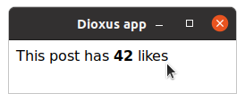
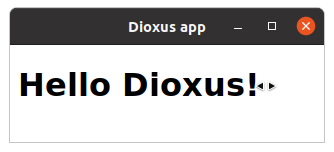

Introdução
Dioxus é uma estrutura portátil, de alto desempenho e ergonômica para a construção de interfaces de usuário multiplataforma no Rust. Este guia irá ajudá-lo a começar a escrever aplicativos Dioxus para a Web, Desktop, Mobile e muito mais.
#![allow(unused)] fn main() { fn app(cx: Scope) -> Element { let mut count = use_state(cx, || 0); cx.render(rsx!( h1 { "High-Five counter: {count}" } button { onclick: move |_| count += 1, "Up high!" } button { onclick: move |_| count -= 1, "Down low!" } )) } }
Dioxus é fortemente inspirado pelo React. Se você conhece o React, começar com o Dioxus será muito fácil.
Este guia pressupõe que você já conhece um pouco de Rust! Caso contrário, recomendamos ler the book para aprender Rust primeiro.
Recursos
- Aplicativos de desktop rodando nativamente (sem Electron!) em menos de 10 linhas de código.
- Gerenciamento de estado incrivelmente ergonômico e poderoso.
- Documentação em linha abrangente - documentação sob o mouse e guias para todos os elementos HTML e manipuladores de eventos.
- Extremamente eficiente de memória – 0 alocações globais para componentes de estado estacionário.
- Agendador assíncrono multicanal para suporte assíncrono de primeira classe.
- E mais! Leia as [notas de lançamento completa](https://dioxuslabs.com/blog/introducing-dioxus/.
Multi Plataforma
Dioxus é um kit de ferramentas portátil, o que significa que a implementação do núcleo pode ser executada em qualquer lugar sem independente da plataforma. Ao contrário de muitos outros kits de ferramentas de frontend Rust, o Dioxus não está intrinsecamente vinculado ao WebSys. Na verdade, todos os elementos e ouvintes de eventos podem ser trocados em tempo de compilação. Por padrão, o Dioxus vem com o recurso html habilitado, mas isso pode ser desabilitado dependendo do seu renderizador de destino.
No momento, temos vários renderizadores de terceiros:
- WebSys (para WASM): Ótimo suporte
- Tao/Tokio (para aplicativos de desktop): Bom suporte
- Tao/Tokio (para aplicativos móveis): Suporte ruim
- SSR (para gerar marcação estática)
- TUI/Rink (para aplicativos baseados em terminal): Experimental
Estabilidade
Dioxus ainda não chegou a uma versão estável.
Web: como a Web é uma plataforma bastante madura, esperamos que haja muito pouca rotatividade de API para recursos baseados na Web.
Desktop: APIs provavelmente estarão em fluxo à medida que descobrimos padrões melhores do que nossa contraparte, ElectronJS.
SSR: Não esperamos que a API SSR mude drasticamente no futuro.
Introdução
Esta seção irá ajudá-lo a configurar seu projeto Dioxus!
Pré-requisitos
Editor
O Dioxus se integra muito bem com o plugin Rust-Analyzer LSP que fornecerá realce de sintaxe apropriado, navegação de código, folding e muito mais.
Rust
Vá para https://rust-lang.org e instale o compilador Rust.
É altamente recomendável ler o livro oficial do Rust completamente. No entanto, nossa esperança é que um aplicativo Dioxus possa servir como um ótimo primeiro projeto Rust. Com Dioxus, você aprenderá sobre:
- Manipulação de erros
- Estruturas, Funções, Enums
- Closures
- Macros
Nós empenhamos muito cuidado para tornar a sintaxe do Dioxus familiar e fácil de entender, para que você não precise de conhecimento profundo sobre async, lifetime ou smart pointers até que você realmente comece a criar aplicativos Dioxus complexos.
Dependências Específicas da Plataforma
Windows
Os aplicativos da área de trabalho do Windows dependem do WebView2 – uma biblioteca que deve ser instalada em todas as distribuições modernas do Windows. Se você tiver o Edge instalado, o Dioxus funcionará bem. Se você não tiver o Webview2, você poderá instalá-lo pela Microsoft. MS oferece 3 opções:
- Um pequeno bootstrapper "evergreen" que buscará um instalador do CDN da Microsoft
- Um pequeno instalador que buscará o Webview2 do CDN da Microsoft
- Uma versão vinculada estaticamente do Webview2 em seu binário final para usuários offline
Para fins de desenvolvimento, use a Opção 1.
Linux
Os aplicativos Webview Linux requerem WebkitGtk. Ao distribuir, isso pode ser parte de sua árvore de dependência em seu .rpm ou .deb. No entanto, é muito provável que seus usuários já tenham o WebkitGtk.
sudo apt install libwebkit2gtk-4.0-dev libgtk-3-dev libappindicator3-dev
Ao usar o Debian/bullseye, o libappindicator3-dev não está mais disponível, pois foi substituído por libayatana-appindicator3-dev.
# on Debian/bullseye use:
sudo apt install libwebkit2gtk-4.0-dev libgtk-3-dev libayatana-appindicator3-dev
Se você tiver problemas, certifique-se de ter todo o básico instalado, conforme descrito nos documentos do Tauri.
Mac OS
Atualmente – tudo para macOS está integrado! No entanto, você pode encontrar um problema se estiver usando o Rust nightly devido a alguns problemas de permissão em nossa dependência do Tao (que foram resolvidos, mas não publicados).
Extensões do Cargo Sugeridas
Se você quiser manter seu fluxo de trabalho tradicional como npm install XXX para adicionar pacotes, você pode querer instalar o cargo-edit e algumas outras extensões cargo interessantes:
- cargo-expand para expandir chamadas de macro
- árvore de carga – um comando de carga integrado que permite inspecionar sua árvore de dependência
Guias de configuração
Dioxus suporta múltiplas plataformas. Dependendo do que você quer, a configuração é um pouco diferente.
- Web: rodando no navegador usando WASM
- Server Side Rendering: renderiza Dioxus HTML como texto
- Desktop: um aplicativo autônomo usando o webview
- Celular
- Terminal UI: interface gráfica baseada em texto do terminal
Aplicativo de área de trabalho
Crie um aplicativo de desktop nativo autônomo que tenha a mesma aparência em todos os sistemas operacionais.
Os aplicativos criados com o Dioxus geralmente têm menos de 5 MB de tamanho e usam os recursos existentes do sistema, para que não consumam quantidades extremas de RAM ou memória.
Exemplos:
[ ](https://github.com/DioxusLabs/example-projects/tree /master/file-explorer)
](https://github.com/DioxusLabs/example-projects/tree /master/file-explorer)
Suporte
O desktop é uma plataforma poderosa para o Dioxus, mas atualmente é limitado em capacidade quando comparado à plataforma Web. Atualmente, os aplicativos de desktop são renderizados com a biblioteca WebView da própria plataforma, mas seu código Rust está sendo executado nativamente em um thread nativo. Isso significa que as APIs do navegador não estão disponíveis, portanto, renderizar WebGL, Canvas, etc. não é tão fácil quanto a Web. No entanto, as APIs do sistema nativo são acessíveis, portanto, streaming, WebSockets, sistema de arquivos, etc., são todas APIs viáveis. No futuro, planejamos migrar para um renderizador DOM personalizado baseado em webrenderer com integrações WGPU.
O Dioxus Desktop é construído a partir do Tauri. No momento, não há abstrações do Dioxus sobre atalhos de teclado, barra de menus, manuseio, etc., então você deve aproveitar o Tauri - principalmente Wry e Tao) diretamente.
Criando um projeto
Crie uma nova caixa:
cargo new --bin demo
cd demo
Adicione o Dioxus com o recurso desktop (isso irá editar o Cargo.toml):
cargo add dioxus
cargo add dioxus-desktop
Edite seu main.rs:
#![allow(non_snake_case)] // import the prelude to get access to the `rsx!` macro and the `Scope` and `Element` types use dioxus::prelude::*; fn main() { // launch the dioxus app in a webview dioxus_desktop::launch(App); } // define a component that renders a div with the text "Hello, world!" fn App(cx: Scope) -> Element { cx.render(rsx! { div { "Hello, world!" } }) }
Web
Crie aplicativos de página única (SPA) que são executados no navegador com o Dioxus. Para rodar na Web, seu aplicativo deve ser compilado para WebAssembly e utilizar a crate dioxus com o recurso web ativado.
Uma compilação do Dioxus para a web será aproximadamente equivalente ao tamanho de uma compilação do React (70kb vs 65kb), mas carregará significativamente mais rápido devido ao StreamingCompile do WebAssembly.
Exemplos:
[ ](https://github.com/DioxusLabs/example-projects/blob/master /todomvc)
](https://github.com/DioxusLabs/example-projects/blob/master /todomvc)
Nota: Devido às limitações do Wasm, nem todos as
cratesfuncionarão com seus aplicativos da web, portanto, você precisará certificar-se de que suascratesfuncionem sem chamadas de sistema nativas (temporizadores, IO, etc.).
Suporte
A Web é a plataforma de destino com melhor suporte para Dioxus.
Ferramentas
Para desenvolver seu aplicativo Dioxus para a web, você precisará de uma ferramenta para construir e servir seus itens. Recomendamos usar trunk que inclui um sistema de compilação, otimização Wasm, um servidor dev e suporte para SASS/CSS:
cargo install trunk
Certifique-se de que o destino wasm32-unknown-unknown esteja instalado:
rustup target add wasm32-unknown-unknown
Criando um Projeto
Crie uma nova caixa:
cargo new --bin demo
cd demo
Adicione o Dioxus como uma dependência com o recurso web:
cargo add dioxus
cargo add dioxus-web
Adicione um index.html para o Trunk usar. Certifique-se de que seu elemento "mount point" tenha um ID de "main":
<!DOCTYPE html>
<html>
<head>
<meta charset="utf-8" />
<meta name="viewport" content="width=device-width, initial-scale=1.0" />
</head>
<body>
<div id="main"></div>
</body>
</html>
Edite seu main.rs:
#![allow(non_snake_case)] // import the prelude to get access to the `rsx!` macro and the `Scope` and `Element` types use dioxus::prelude::*; fn main() { // launch the web app dioxus_web::launch(App); } // create a component that renders a div with the text "Hello, world!" fn App(cx: Scope) -> Element { cx.render(rsx! { div { "Hello, world!" } }) }
E para servir nosso aplicativo:
trunk serve
Configurando o Hot Reload
- O recarregamento em tempo-real (hot reload) permite tempos de iteração muito mais rápidos dentro de chamadas 'rsx', interpretando-as e transmitindo as edições.
- É útil para alterar o estilo/layout de um programa, mas não ajudará na alteração da lógica de um programa.
- Atualmente, o cli implementa apenas o hot-reload para o renderizador da web.
Configurar
Instale o dioxus-cli. Habilite o recurso de hot-reload no dioxus:
dioxus = { version = "*", features = ["hot-reload"] }
Usage
- Execute:
dioxus serve --hot-reload
- alterar algum código dentro de uma macro
rsx - abra seu
localhostem um navegador - salve e observe a mudança de estilo sem recompilar
Limitações
- O interpretador só pode usar expressões que existiam na última recompilação completa. Se você introduzir uma nova variável ou expressão na chamada
rsx, ela acionará uma recompilação completa para capturar a expressão. - Componentes e Iteradores podem conter código de Rust arbitrário e acionarão uma recompilação completa quando alterados.
Renderização por Servidor
O Dioxus 'VirtualDom' pode ser renderizado por servidor.
Suporte a Multitarefas
O Dioxus VirtualDom, infelizmente, atualmente não é Send. Internamente, usamos um pouco de mutabilidade interior que não é thread-safe. Isso significa que você não pode usar Dioxus facilmente com a maioria dos frameworks da web como Tide, Rocket, Axum, etc.
Para resolver isso, você deve gerar um VirtualDom em seu próprio thread e se comunicar com ele por meio de canais.
Ao trabalhar com frameworks web que requerem Send, é possível renderizar um VirtualDom imediatamente para uma String – mas você não pode manter o VirtualDom em um ponto de espera. Para SSR de estado retido (essencialmente LiveView), você precisará criar um pool de VirtualDoms.
Configurar
Se você quer apenas renderizar rsx! ou um VirtualDom para HTML, confira os documentos da API. É bem simples:
#![allow(unused)] fn main() { // We can render VirtualDoms let mut vdom = VirtualDom::new(app); let _ = vdom.rebuild(); println!("{}", dioxus::ssr::render_vdom(&vdom)); // Or we can render rsx! calls directly println!( "{}", dioxus::ssr::render_lazy(rsx! { h1 { "Hello, world!" } } ); }
No entanto, para este guia, vamos mostrar como usar Dioxus SSR com Axum.
Certifique-se de ter o Rust and Cargo instalado e, em seguida, crie um novo projeto:
cargo new --bin demo
cd app
Adicione o Dioxus com o recurso ssr:
cargo add dioxus
cargo add dioxus-ssr
Em seguida, adicione todas as dependências do Axum. Isso será diferente se você estiver usando um Web Framework diferente
cargo add tokio --features full
cargo add axum
Suas dependências devem ficar mais ou menos assim:
[dependencies]
axum = "0.4.5"
dioxus = { version = "*" }
dioxus-ssr = { version = "*" }
tokio = { version = "1.15.0", features = ["full"] }
Agora, configure seu aplicativo Axum para responder em um endpoint.
use axum::{response::Html, routing::get, Router}; use dioxus::prelude::*; #[tokio::main] async fn main() { let addr = std::net::SocketAddr::from(([127, 0, 0, 1], 3000)); println!("listening on http://{}", addr); axum::Server::bind(&addr) .serve( Router::new() .route("/", get(app_endpoint)) .into_make_service(), ) .await .unwrap(); }
E, em seguida, adicione nosso endpoint. Podemos renderizar rsx! diretamente:
#![allow(unused)] fn main() { async fn app_endpoint() -> Html<String> { Html(dioxus_ssr::render_lazy(rsx! { h1 { "hello world!" } })) } }
Ou podemos renderizar VirtualDoms.
#![allow(unused)] fn main() { async fn app_endpoint() -> Html<String> { fn app(cx: Scope) -> Element { cx.render(rsx!(h1 { "hello world" })) } let mut app = VirtualDom::new(app); let _ = app.rebuild(); Html(dioxus_ssr::render_vdom(&app)) } }
E é isso!
Você pode notar que não pode manter o VirtualDom em um ponto de espera. Dioxus atualmente não é ThreadSafe, então deve permanecer no thread que iniciou. Estamos trabalhando para flexibilizar essa exigência.
IU do terminal
Você pode construir uma interface baseada em texto que será executada no terminal usando o Dioxus.

Nota: este livro foi escrito tendo em mente plataformas baseadas em HTML. Você pode acompanhar a TUI, mas terá que se adaptar um pouco.
Suporte
O suporte à TUI é atualmente bastante experimental. Até o nome do projeto mudará. Mas, se você estiver disposto a se aventurar no reino do desconhecido, este guia o ajudará a começar.
Configurando
Comece criando um novo pacote e adicionando nosso recurso TUI.
cargo new --bin demo
cd demo
cargo add dioxus
cargo add dioxus-tui
Em seguida, edite seu main.rs com o modelo básico.
#![allow(non_snake_case)] // import the prelude to get access to the `rsx!` macro and the `Scope` and `Element` types use dioxus::prelude::*; fn main() { // launch the app in the terminal dioxus_tui::launch(App); } // create a component that renders a div with the text "Hello, world!" fn App(cx: Scope) -> Element { cx.render(rsx! { div { "Hello, world!" } }) }
Para executar nosso aplicativo:
cargo run
Pressione "ctrl-c" para fechar o aplicativo. Para mudar de "ctrl-c" para apenas "q" para sair, você pode iniciar o aplicativo com uma configuração para desativar o sair padrão e usar a raiz TuiContext para sair por conta própria.
// todo remove deprecated #![allow(non_snake_case, deprecated)] use dioxus::events::{KeyCode, KeyboardEvent}; use dioxus::prelude::*; use dioxus_tui::TuiContext; fn main() { dioxus_tui::launch_cfg( App, dioxus_tui::Config::new() .without_ctrl_c_quit() // Some older terminals only support 16 colors or ANSI colors // If your terminal is one of these, change this to BaseColors or ANSI .with_rendering_mode(dioxus_tui::RenderingMode::Rgb), ); } fn App(cx: Scope) -> Element { let tui_ctx: TuiContext = cx.consume_context().unwrap(); cx.render(rsx! { div { width: "100%", height: "10px", background_color: "red", justify_content: "center", align_items: "center", onkeydown: move |k: KeyboardEvent| if let KeyCode::Q = k.key_code { tui_ctx.quit(); }, "Hello world!" } }) }
Notas
- Nosso pacote TUI usa flexbox para layout
- 1px é a altura da linha de um caractere. Seu px CSS regular não traduz.
- Se seu aplicativo entrar em pânico, seu terminal será destruído. Isso será corrigido eventualmente.
Aplicativo móvel
Crie um aplicativo móvel com Dioxus!
Exemplo: Aplicativo Todo
Suporte
Atualmente, a plataforma móvel é o destino de renderizador menos suportado para o Dioxus. Os aplicativos móveis são renderizados com o WebView da plataforma, o que significa que animações, transparência e widgets nativos não estão disponíveis no momento.
Além disso, o iOS é a única plataforma móvel compatível. É possível obter o Dioxus rodando no Android e renderizado com WebView, mas a biblioteca de janelas do Rust que o Dioxus usa – tao – atualmente não suporta Android.
Atualmente, o suporte móvel é mais adequado para aplicativos no estilo CRUD, idealmente para equipes internas que precisam desenvolver rapidamente, mas não se importam muito com animações ou widgets nativos.
Configurando
A configuração com dispositivos móveis pode ser bastante desafiadora. As ferramentas aqui não são ótimas (ainda) e podem precisar de alguns hacks para fazer as coisas funcionarem. O macOS M1 é amplamente inexplorado e pode não funcionar para você.
Vamos usar cargo-mobile para construir para dispositivos móveis. Primeiro, instale-o:
cargo install --git https://github.com/BrainiumLLC/cargo-mobile
E, em seguida, inicialize seu aplicativo para a plataforma certa. Use o modelo winit por enquanto. No momento, não há modelo "Dioxus" no cargo-mobile.
cargo mobile init
Nós vamos limpar completamente as dependências que ele gera para nós, trocando winit por dioxus-mobile.
[package]
name = "dioxus-ios-demo"
version = "0.1.0"
authors = ["Jonathan Kelley <jkelleyrtp@gmail.com>"]
edition = "2018"
# leave the `lib` declaration
[lib]
crate-type = ["staticlib", "cdylib", "rlib"]
# leave the binary it generates for us
[[bin]]
name = "dioxus-ios-demo-desktop"
path = "gen/bin/desktop.rs"
# clear all the dependencies
[dependencies]
mobile-entry-point = "0.1.0"
dioxus = { version = "*" }
dioxus-desktop = { version = "*" }
simple_logger = "*"
Edite seu lib.rs:
use dioxus::prelude::*; fn main() { dioxus_desktop::launch(app); } fn app(cx: Scope) -> Element { cx.render(rsx!{ div { "hello world!" } }) }
Descrevendo a Interface do Usuário
Dioxus é uma estrutura declarativa. Isso significa que, em vez de dizer ao Dioxus o que fazer (por exemplo, "criar um elemento" ou "definir a cor para vermelho"), simplesmente declaramos como queremos que a interface do usuário se pareça usando o RSX.
Você já viu um exemplo simples ou sintaxe RSX no aplicativo "hello world":
#![allow(unused)] fn main() { // define a component that renders a div with the text "Hello, world!" fn App(cx: Scope) -> Element { cx.render(rsx! { div { "Hello, world!" } }) } }
Aqui, usamos a macro rsx! para declarar que queremos um elemento div, contendo o texto "Hello, world!". Dioxus pega o RSX e constrói uma interface do usuário a partir dele.
Recursos do RSX
O RSX é muito semelhante ao HTML, pois descreve elementos com atributos e filhos. Aqui está um elemento div vazio no RSX, bem como o HTML resultante:
#![allow(unused)] fn main() { cx.render(rsx!(div { // attributes / listeners // children })) }
<div></div>
Filhos
Para adicionar filhos a um elemento, coloque-os dentro dos colchetes {}. Eles podem ser outros elementos ou texto. Por exemplo, você pode ter um elemento ol (lista ordenada), contendo 3 elementos li (item da lista), cada um dos quais contém algum texto:
#![allow(unused)] fn main() { cx.render(rsx!(ol { li {"First Item"} li {"Second Item"} li {"Third Item"} })) }
<ol>
<li>First Item</li>
<li>Second Item</li>
<li>Third Item</li>
</ol>
Fragmentos
Você também pode "agrupar" elementos envolvendo-os em Fragment {}. Isso não criará nenhum elemento adicional.
Nota: você também pode renderizar vários elementos no nível superior de
rsx!e eles serão agrupados automaticamente – não há necessidade de umFragment {}explícito lá.
#![allow(unused)] fn main() { cx.render(rsx!( p {"First Item"}, p {"Second Item"}, Fragment { span { "a group" }, span { "of three" }, span { "items" }, } )) }
<p>First Item</p>
<p>Second Item</p>
<span>a group</span>
<span>of three</span>
<span>items</span>
Atributos
Os atributos também são especificados dentro dos colchetes {}, usando a sintaxe name: value. Você pode fornecer o valor como um literal no RSX:
#![allow(unused)] fn main() { cx.render(rsx!(a { href: "https://www.youtube.com/watch?v=dQw4w9WgXcQ", class: "primary_button", color: "red", })) }
<a
href="https://www.youtube.com/watch?v=dQw4w9WgXcQ"
class="primary_button"
autofocus="true"
>Log In</a
>
Nota: Todos os atributos definidos em
dioxus-htmlseguem a convenção de nomenclatura snake_case. Eles transformam seus nomessnake_caseem atributoscamelCasedo HTML.
Atributos Personalizados
Dioxus tem um conjunto pré-configurado de atributos que você pode usar. O RSX é validado em tempo de compilação para garantir que você não especificou um atributo inválido. Se você quiser substituir esse comportamento por um nome de atributo personalizado, especifique o atributo entre aspas:
#![allow(unused)] fn main() { cx.render(rsx!(b { "customAttribute": "value", })) }
<b customAttribute="value"> Rust is cool </b>
Interpolação
Da mesma forma que você pode formatar Rust strings, você também pode interpolar no texto RSX. Use {variable} para exibir o valor de uma variável em uma string, ou {variable:?} para usar a representação Debug:
#![allow(unused)] fn main() { let coordinates = (42, 0); let country = "es"; cx.render(rsx!(div { class: "country-{country}", "position": "{coordinates:?}", // arbitrary expressions are allowed, // as long as they don't contain `{}` div { "{country.to_uppercase()}" }, div { "{7*6}" }, // {} can be escaped with {{}} div { "{{}}" }, })) }
<div class="country-es">
Coordinates: (42, 0)
<div>ES</div>
<div>42</div>
</div>
Expressões
Você pode incluir expressões Rust arbitrárias dentro do RSX, mas deve escapá-las entre colchetes []:
#![allow(unused)] fn main() { let text = "Dioxus"; cx.render(rsx!(span { text.to_uppercase(), // create a list of text from 0 to 9 (0..10).map(|i| rsx!{ i.to_string() }) })) }
<span>DIOXUS</span>
Atributos Especiais
Enquanto a maioria dos atributos são simplesmente passados para o HTML, alguns têm comportamentos especiais.
A Escotilha de Escape do HTML
Se você estiver trabalhando com itens pré-renderizados, modelos ou uma biblioteca JS, convém passar o HTML diretamente em vez de passar pelo Dioxus. Nesses casos, use dangerous_inner_html.
Por exemplo, enviar um conversor de markdown para Dioxus pode aumentar significativamente o tamanho final do aplicativo. Em vez disso, você desejará pré-renderizar sua remarcação para HTML e, em seguida, incluir o HTML diretamente em sua saída. Usamos essa abordagem para a página inicial do Dioxus:
#![allow(unused)] fn main() { // this should come from a trusted source let contents = "live <b>dangerously</b>"; cx.render(rsx! { div { dangerous_inner_html: "{contents}", } }) }
Nota! Esse atributo é chamado de "dangerous_inner_html" porque é perigoso passar dados que você não confia. Se você não for cuidadoso, poderá facilmente expor ataques de cross-site scripting (XSS) aos seus usuários.
Se você estiver lidando com entradas não confiáveis, certifique-se de higienizar seu HTML antes de passá-lo para
dangerous_inner_html– ou apenas passe-o para um elemento de texto para escapar de qualquer tag HTML.
Atributos Booleanos
A maioria dos atributos, quando renderizados, serão renderizados exatamente como a entrada que você forneceu. No entanto, alguns atributos são considerados atributos "booleanos" e apenas sua presença determina se eles afetam a saída. Para esses atributos, um valor fornecido de "false" fará com que eles sejam removidos do elemento de destino.
Portanto, este RSX não renderizaria o atributo hidden:
#![allow(unused)] fn main() { cx.render(rsx! { div { hidden: "false", "hello" } }) }
<div>hello</div>
No entanto, nem todos os atributos funcionam assim. Apenas os seguintes atributos têm este comportamento:
allowfullscreenallowpaymentrequestasyncautofocusautoplaycheckedcontrolsdefaultdeferdisabledformnovalidatehiddenismapitemscopeloopmultiplemutednomodulenovalidateopenplaysinlinereadonlyrequiredreversedselectedtruespeed
Para quaisquer outros atributos, um valor de "false" será enviado diretamente para o DOM.
Componentes
Assim como você não gostaria de escrever um programa complexo em uma única e longa função main, você não deve construir uma interface complexa em uma única função App. Em vez disso, seria melhor dividir a funcionalidade de um aplicativo em partes lógicas chamadas componentes.
Um componente é uma função Rust, nomeada em UpperCammelCase, que recebe um parâmetro Scope e retorna um Element descrevendo a interface do usuário que deseja renderizar. Na verdade, nossa função App é um componente!
#![allow(unused)] fn main() { // define a component that renders a div with the text "Hello, world!" fn App(cx: Scope) -> Element { cx.render(rsx! { div { "Hello, world!" } }) } }
Você provavelmente desejará adicionar
#![allow(non_snake_case)]no topo de sua caixa para evitar avisos sobre o nome da função
Um Componente é responsável por alguma tarefa de renderização – normalmente, renderizando uma parte isolada da interface do usuário. Por exemplo, você pode ter um componente About que renderiza uma breve descrição do Dioxus Labs:
#![allow(unused)] fn main() { pub fn About(cx: Scope) -> Element { cx.render(rsx!(p { b {"Dioxus Labs"} " An Open Source project dedicated to making Rust UI wonderful." })) } }
Em seguida, você pode renderizar seu componente em outro componente, da mesma forma que os elementos são renderizados:
#![allow(unused)] fn main() { fn App(cx: Scope) -> Element { cx.render(rsx! { About {}, About {}, }) } }

Neste ponto, pode parecer que os componentes nada mais são do que funções. No entanto, à medida que você aprende mais sobre os recursos do Dioxus, verá que eles são realmente mais poderosos!
Props de Componentes
Assim como você pode passar argumentos para uma função, você pode passar props para um componente que personaliza seu comportamento! Os componentes que vimos até agora não aceitam props – então vamos escrever alguns componentes que aceitam.
#[derive(Props)]
Props de componente são uma única estrutura anotada com #[derive(Props)]. Para um componente aceitar props, o tipo de seu argumento deve ser Scope<YourPropsStruct>. Então, você pode acessar o valor das props usando cx.props.
Existem 2 tipos de estruturas Props:
propspróprios:- Não tem uma vida útil associada
- Implementam
PartialEq, permitindo a memoização (se os props não mudarem, o Dioxus não renderizará novamente o componente)
propsemprestados:- Emprestado de um componente pai
- Não pode ser memoizado devido a restrições de tempo de vida (Rust's lifetime)
Props Próprios
Props próprios são muito simples – eles não emprestam nada. Exemplo:
#![allow(unused)] fn main() { // Remember: Owned props must implement `PartialEq`! #[derive(PartialEq, Props)] struct LikesProps { score: i32, } fn Likes(cx: Scope<LikesProps>) -> Element { cx.render(rsx! { div { "This post has ", b { "{cx.props.score}" }, " likes" } }) } }
Você pode então passar valores de prop para o componente da mesma forma que você passaria atributos para um elemento:
#![allow(unused)] fn main() { fn App(cx: Scope) -> Element { cx.render(rsx! { Likes { score: 42, }, }) } }

Props Emprestados
Possuir props funciona bem se seus props forem fáceis de copiar – como um único número. Mas e se precisarmos passar um tipo de dados maior, como uma String de um componente App para um subcomponente TitleCard? Uma solução ingênua pode ser .clone() a String, criando uma cópia dela para o subcomponente – mas isso seria ineficiente, especialmente para Strings maiores.
Rust permite algo mais eficiente – emprestar a String como um &str – é para isso que servem as props emprestadas!
#![allow(unused)] fn main() { #[derive(Props)] struct TitleCardProps<'a> { title: &'a str, } fn TitleCard<'a>(cx: Scope<'a, TitleCardProps<'a>>) -> Element { cx.render(rsx! { h1 { "{cx.props.title}" } }) } }
Podemos então usar o componente assim:
#![allow(unused)] fn main() { fn App(cx: Scope) -> Element { let hello = "Hello Dioxus!"; cx.render(rsx!(TitleCard { title: hello })) } }

Props de Option
A macro #[derive(Props)] tem alguns recursos que permitem personalizar o comportamento dos adereços.
Props Opcionais
Você pode criar campos opcionais usando o tipo Option<…> para um campo:
#![allow(unused)] fn main() { #[derive(Props)] struct OptionalProps<'a> { title: &'a str, subtitle: Option<&'a str>, } fn Title<'a>(cx: Scope<'a, OptionalProps>) -> Element<'a> { cx.render(rsx!(h1{ "{cx.props.title}: ", cx.props.subtitle.unwrap_or("No subtitle provided"), })) } }
Em seguida, você pode optar por fornecê-los ou não:
#![allow(unused)] fn main() { Title { title: "Some Title", }, Title { title: "Some Title", subtitle: "Some Subtitle", }, // Providing an Option explicitly won't compile though: // Title { // title: "Some Title", // subtitle: None, // }, }
Option Explicitamente Obrigatórias
Se você quiser exigir explicitamente uma Option, e não uma prop opcional, você pode anotá-la com #[props(!optional)]:
#![allow(unused)] fn main() { #[derive(Props)] struct ExplicitOptionProps<'a> { title: &'a str, #[props(!optional)] subtitle: Option<&'a str>, } fn ExplicitOption<'a>(cx: Scope<'a, ExplicitOptionProps>) -> Element<'a> { cx.render(rsx!(h1 { "{cx.props.title}: ", cx.props.subtitle.unwrap_or("No subtitle provided"), })) } }
Então, você tem que passar explicitamente Some("str") ou None:
#![allow(unused)] fn main() { ExplicitOption { title: "Some Title", subtitle: None, }, ExplicitOption { title: "Some Title", subtitle: Some("Some Title"), }, // This won't compile: // ExplicitOption { // title: "Some Title", // }, }
Props Padrão
Você pode usar #[props(default = 42)] para tornar um campo opcional e especificar seu valor padrão:
#![allow(unused)] fn main() { #[derive(PartialEq, Props)] struct DefaultProps { // default to 42 when not provided #[props(default = 42)] number: i64, } fn DefaultComponent(cx: Scope<DefaultProps>) -> Element { cx.render(rsx!(h1 { "{cx.props.number}" })) } }
Então, da mesma forma que props opcionais, você não precisa fornecê-lo:
#![allow(unused)] fn main() { DefaultComponent { number: 5, }, DefaultComponent {}, }
Conversão Automática com .into
É comum que as funções Rust aceitem impl Into<SomeType> em vez de apenas SomeType para suportar uma ampla gama de parâmetros. Se você quiser uma funcionalidade semelhante com props, você pode usar #[props(into)]. Por exemplo, você pode adicioná-lo em uma prop String – e &str também será aceito automaticamente, pois pode ser convertido em String:
#![allow(unused)] fn main() { #[derive(PartialEq, Props)] struct IntoProps { #[props(into)] string: String, } fn IntoComponent(cx: Scope<IntoProps>) -> Element { cx.render(rsx!(h1 { "{cx.props.string}" })) } }
Então, você pode usá-lo assim:
#![allow(unused)] fn main() { IntoComponent { string: "some &str", }, }
A macro inline_props
Até agora, todas as funções Component que vimos tinham uma struct ComponentProps correspondente para passar em props. Isso foi bastante verboso... Não seria legal ter props como argumentos de função simples? Então não precisaríamos definir uma estrutura Props, e ao invés de digitar cx.props.whatever, poderíamos usar whatever diretamente!
inline_props permite que você faça exatamente isso. Em vez de digitar a versão "completa":
#![allow(unused)] fn main() { #[derive(Props, PartialEq)] struct TitleCardProps { title: String, } fn TitleCard(cx: Scope<TitleCardProps>) -> Element { cx.render(rsx!{ h1 { "{cx.props.title}" } }) } }
...você pode definir uma função que aceita props como argumentos. Então, basta anotá-lo com #[inline_props], e a macro irá transformá-lo em um componente regular para você:
#![allow(unused)] fn main() { #[inline_props] fn TitleCard(cx: Scope, title: String) -> Element { cx.render(rsx!{ h1 { "{title}" } }) } }
Embora o novo Componente seja mais curto e fácil de ler, essa macro não deve ser usada por autores de bibliotecas, pois você tem menos controle sobre a documentação do Prop.
Componente Filhos
Em alguns casos, você pode desejar criar um componente que atue como um contêiner para algum outro conteúdo, sem que o componente precise saber qual é esse conteúdo. Para conseguir isso, crie uma prop do tipo Element:
#![allow(unused)] fn main() { #[derive(Props)] struct ClickableProps<'a> { href: &'a str, body: Element<'a>, } fn Clickable<'a>(cx: Scope<'a, ClickableProps<'a>>) -> Element { cx.render(rsx!( a { href: "{cx.props.href}", class: "fancy-button", &cx.props.body } )) } }
Então, ao renderizar o componente, você pode passar a saída de cx.render(rsx!(...)):
#![allow(unused)] fn main() { cx.render(rsx! { Clickable { href: "https://www.youtube.com/watch?v=C-M2hs3sXGo", body: cx.render(rsx!("How to " i {"not"} " be seen")), } }) }
Nota: Como
Element<'a>é uma prop emprestado, não haverá memoização.
Atenção: Embora possa compilar, não inclua o mesmo
Elementmais de uma vez no RSX. O comportamento resultante não é especificado.
O Campo children
Em vez de passar o RSX através de uma prop regular, você pode querer aceitar filhos da mesma forma que os elementos podem ter filhos. O prop "mágico" children permite que você consiga isso:
#![allow(unused)] fn main() { #[derive(Props)] struct ClickableProps<'a> { href: &'a str, children: Element<'a>, } fn Clickable<'a>(cx: Scope<'a, ClickableProps<'a>>) -> Element { cx.render(rsx!( a { href: "{cx.props.href}", class: "fancy-button", &cx.props.children } )) } }
Isso torna o uso do componente muito mais simples: basta colocar o RSX dentro dos colchetes {} – e não há necessidade de uma chamada render ou outra macro!
#![allow(unused)] fn main() { cx.render(rsx! { Clickable { href: "https://www.youtube.com/watch?v=C-M2hs3sXGo", "How to " i {"not"} " be seen" } }) }
Interatividade
Até agora, aprendemos como descrever a estrutura e as propriedades de nossas interfaces de usuário. No entanto, a maioria das interfaces precisa ser interativa para ser útil. Neste capítulo, descrevemos como fazer um aplicativo Dioxus que responde ao usuário.
Manipuladores de eventos
Eventos são ações interessantes que acontecem, geralmente relacionadas a algo que o usuário fez. Por exemplo, alguns eventos acontecem quando o usuário clica, rola, move o mouse ou digita um caractere. Para responder a essas ações e tornar a interface do usuário interativa, precisamos lidar com esses eventos.
Os eventos estão associados a elementos. Por exemplo, geralmente não nos importamos com todos os cliques que acontecem em um aplicativo, apenas aqueles em um botão específico. Para lidar com eventos que acontecem em um elemento, devemos anexar o manipulador de eventos desejado a ele.
Os manipuladores de eventos são semelhantes aos atributos regulares, mas seus nomes geralmente começam com on - e aceitam encerramentos como valores. O encerramento será chamado sempre que o evento for acionado e será passado esse evento.
Por exemplo, para manipular cliques em um elemento, podemos especificar um manipulador onclick:
#![allow(unused)] fn main() { cx.render(rsx! { button { onclick: move |event| println!("Clicked! Event: {event:?}"), "click me!" } }) }
O Objeto Evento
Os manipuladores de eventos recebem um objeto UiEvent contendo informações sobre o evento. Diferentes tipos de eventos contêm diferentes tipos de dados. Por exemplo, eventos relacionados ao mouse contêm MouseData, que informa coisas como onde o mouse foi clicado e quais botões do mouse foram usados.
No exemplo acima, esses dados de evento foram registrados no terminal:
Clicked! Event: UiEvent { data: MouseData { coordinates: Coordinates { screen: (468.0, 109.0), client: (73.0, 25.0), element: (63.0, 15.0), page: (73.0, 25.0) }, modifiers: (empty), held_buttons: EnumSet(), trigger_button: Some(Primary) } }
Clicked! Event: UiEvent { data: MouseData { coordinates: Coordinates { screen: (468.0, 109.0), client: (73.0, 25.0), element: (63.0, 15.0), page: (73.0, 25.0) }, modifiers: (empty), held_buttons: EnumSet(), trigger_button: Some(Primary) } }
Para saber o que os diferentes tipos de eventos fornecem, leia os documentos do módulo de eventos.
Parando a propagação
Quando você tem, por exemplo um button dentro de um div, qualquer clique no button também é um clique no div. Por esta razão, Dioxus propaga o evento click: primeiro, ele é acionado no elemento alvo, depois nos elementos pai. Se você quiser evitar esse comportamento, você pode chamar cancel_bubble() no evento:
#![allow(unused)] fn main() { cx.render(rsx! { button { onclick: move |event| println!("Clicked! Event: {event:?}"), "click me!" } }) }
Prevenir o Padrão
Alguns eventos têm um comportamento padrão. Para eventos de teclado, isso pode ser inserir o caractere digitado. Para eventos de mouse, isso pode estar selecionando algum texto.
Em alguns casos, você pode querer evitar esse comportamento padrão. Para isso, você pode adicionar o atributo prevent_default com o nome do manipulador cujo comportamento padrão você deseja interromper. Este atributo é especial: você pode anexá-lo várias vezes para vários atributos:
#![allow(unused)] fn main() { cx.render(rsx! { input { prevent_default: "oninput onclick", } }) }
Quaisquer manipuladores de eventos ainda serão chamados.
Normalmente, em React ou JavaScript, você chamaria "preventDefault" no evento no retorno de chamada. Dioxus atualmente não suporta este comportamento. Observação: isso significa que você não pode impedir condicionalmente o comportamento padrão.
Manipulador de Props
Às vezes, você pode querer criar um componente que aceite um manipulador de eventos. Um exemplo simples seria um componente FancyButton, que aceita um manipulador on_click:
#![allow(unused)] fn main() { #[derive(Props)] pub struct FancyButtonProps<'a> { on_click: EventHandler<'a, MouseEvent>, } pub fn FancyButton<'a>(cx: Scope<'a, FancyButtonProps<'a>>) -> Element<'a> { cx.render(rsx!(button { class: "fancy-button", onclick: move |evt| cx.props.on_click.call(evt), "click me pls." })) } }
Então, você pode usá-lo como qualquer outro manipulador:
#![allow(unused)] fn main() { cx.render(rsx! { FancyButton { on_click: move |event| println!("Clicked! {event:?}") } }) }
Nota: assim como qualquer outro atributo, você pode nomear os manipuladores como quiser! Embora eles devam começar com
on, para que o prop seja automaticamente transformado em umEventHandlerno local da chamada.Você também pode colocar dados personalizados no evento, em vez de, por exemplo,
MouseData
Hooks e Estado do Componente
Até agora nossos componentes, sendo funções Rust, não tinham estado – eles estavam sempre renderizando a mesma coisa. No entanto, em um componente de interface do usuário, geralmente é útil ter uma funcionalidade com estado para criar interações do usuário. Por exemplo, você pode querer rastrear se o usuário abriu uma lista suspensa e renderizar coisas diferentes de acordo.
Para lógica com estado, você pode usar hooks. Hooks são funções Rust que fazem referência a ScopeState (em um componente, você pode passar &cx), e fornecem funcionalidade e estado.
Hook use_state
use_state é um dos hooks mais simples.
- Você fornece um fechamento que determina o valor inicial
use_statefornece o valor atual e uma maneira de atualizá-lo, definindo-o para outra coisa- Quando o valor é atualizado,
use_statefaz o componente renderizar novamente e fornece o novo valor
Por exemplo, você pode ter visto o exemplo do contador, no qual o estado (um número) é rastreado usando o hook use_state:
#![allow(unused)] fn main() { fn App(cx: Scope) -> Element { // count will be initialized to 0 the first time the component is rendered let mut count = use_state(cx, || 0); cx.render(rsx!( h1 { "High-Five counter: {count}" } button { onclick: move |_| { // changing the count will cause the component to re-render count += 1 }, "Up high!" } button { onclick: move |_| { // changing the count will cause the component to re-render count -= 1 }, "Down low!" } )) } }

Toda vez que o estado do componente muda, ele é renderizado novamente e a função do componente é chamada, para que você possa descrever como deseja que a nova interface do usuário se pareça. Você não precisa se preocupar em "mudar" nada - apenas descreva o que você quer em termos de estado, e Dioxus cuidará do resto!
use_stateretorna seu valor envolto em uma smart pointer do tipoUseState. É por isso que você pode ler o valor e atualizá-lo, mesmo dentro de um manipulador.
Você pode usar vários hooks no mesmo componente se quiser:
#![allow(unused)] fn main() { fn App(cx: Scope) -> Element { let mut count_a = use_state(cx, || 0); let mut count_b = use_state(cx, || 0); cx.render(rsx!( h1 { "Counter_a: {count_a}" } button { onclick: move |_| count_a += 1, "a++" } button { onclick: move |_| count_a -= 1, "a--" } h1 { "Counter_b: {count_b}" } button { onclick: move |_| count_b += 1, "b++" } button { onclick: move |_| count_b -= 1, "b--" } )) } }

Regras dos Hooks
O exemplo acima pode parecer um pouco mágico, já que as funções Rust normalmente não estão associadas ao estado. O Dioxus permite que os hooks mantenham o estado entre as renderizações através de uma referência a ScopeState, e é por isso que você deve passar &cx para eles.
Mas como Dioxus pode diferenciar entre vários hooks no mesmo componente? Como você viu no segundo exemplo, ambas as funções use_state foram chamadas com os mesmos parâmetros, então como elas podem retornar coisas diferentes quando os contadores são diferentes?
#![allow(unused)] fn main() { let mut count_a = use_state(cx, || 0); let mut count_b = use_state(cx, || 0); }
Isso só é possível porque os dois hooks são sempre chamados na mesma ordem, então Dioxus sabe qual é qual. Portanto, a ordem em que você chama os hooks é importante, e é por isso que você deve seguir certas regras ao usar os hooks:
- Hooks só podem ser usados em componentes ou outros hooks (falaremos disso mais tarde)
- Em cada chamada para a função componente
- Os mesmos hooks devem ser chamados
- Na mesma ordem
- Os nomes dos hooks devem começar com
use_para que você não os confunda acidentalmente com funções normais
Essas regras significam que há certas coisas que você não pode fazer com hooks:
Sem Hooks em Condicionais
#![allow(unused)] fn main() { // ❌ don't call hooks in conditionals! // We must ensure that the same hooks will be called every time // But `if` statements only run if the conditional is true! // So we might violate rule 2. if you_are_happy && you_know_it { let something = use_state(cx, || "hands"); println!("clap your {something}") } // ✅ instead, *always* call use_state // You can put other stuff in the conditional though let something = use_state(cx, || "hands"); if you_are_happy && you_know_it { println!("clap your {something}") } }
Sem Hooks em Closures
#![allow(unused)] fn main() { // ❌ don't call hooks inside closures! // We can't guarantee that the closure, if used, will be called in the same order every time let _a = || { let b = use_state(cx, || 0); b.get() }; // ✅ instead, move hook `b` outside let b = use_state(cx, || 0); let _a = || b.get(); }
Sem Hooks em Loops
#![allow(unused)] fn main() { // `names` is a Vec<&str> // ❌ Do not use hooks in loops! // In this case, if the length of the Vec changes, we break rule 2 for _name in &names { let is_selected = use_state(cx, || false); println!("selected: {is_selected}"); } // ✅ Instead, use a hashmap with use_ref let selection_map = use_ref(cx, HashMap::<&str, bool>::new); for name in &names { let is_selected = selection_map.read()[name]; println!("selected: {is_selected}"); } }
Gancho use_ref
use_state é ótimo para rastrear valores simples. No entanto, você pode notar na UseState API que a única maneira de modificar seu valor é substituí-lo por algo else (por exemplo, chamando set, ou através de um dos operadores +=, -=). Isso funciona bem quando é barato construir um valor (como qualquer primitivo). Mas e se você quiser manter dados mais complexos no estado dos componentes?
Por exemplo, suponha que queremos manter um Vec de valores. Se o armazenamos com use_state, a única maneira de adicionar um novo valor à lista seria criar um novo Vec com o valor adicional e colocá-lo no estado. Isto é custoso! Queremos modificar o Vec existente.
Felizmente, existe outro hook para isso, use_ref! É semelhante ao use_state, mas permite obter uma referência mutável aos dados contidos.
Aqui está um exemplo simples que mantém uma lista de eventos em um use_ref. Podemos adquirir acesso de escrita ao estado com .write(), e então apenas .push um novo valor para o estado:
#![allow(unused)] fn main() { fn App(cx: Scope) -> Element { let list = use_ref(cx, Vec::new); cx.render(rsx!( p { "Current list: {list.read():?}" } button { onclick: move |event| { list.with_mut(|list| list.push(event)); }, "Click me!" } )) } }
Os valores de retorno de
use_stateeuse_ref, (UseStateeUseRef, respectivamente) são de alguma forma semelhantes a [Cell](https://doc.rust-lang.org/std/ cell/) eRefCell– eles fornecem mutabilidade interior. No entanto, esses wrappers do Dioxus também garantem que o componente seja renderizado novamente sempre que você alterar o estado.
Entradas do Usuário
As interfaces geralmente precisam fornecer uma maneira de inserir dados: por exemplo, texto, números, caixas de seleção, etc. No Dioxus, há duas maneiras de trabalhar com a entrada do usuário.
Entradas Controladas
Com entradas controladas, você fica diretamente responsável pelo estado da entrada. Isso lhe dá muita flexibilidade e facilita manter as coisas em sincronia. Por exemplo, é assim que você criaria uma entrada de texto controlada:
#![allow(unused)] fn main() { fn App(cx: Scope) -> Element { let name = use_state(cx, || "bob".to_string()); cx.render(rsx! { input { // we tell the component what to render value: "{name}", // and what to do when the value changes oninput: move |evt| name.set(evt.value.clone()), } }) } }
Observe a flexibilidade - você pode:
- Exibir o mesmo conteúdo em outro elemento, e eles estarão em sincronia
- Transformar a entrada toda vez que for modificada (por exemplo, para garantir que seja maiúscula)
- Validar a entrada toda vez que ela mudar
- Ter uma lógica personalizada acontecendo quando a entrada for alterada (por exemplo, solicitação de rede para preenchimento automático)
- Alterar programaticamente o valor (por exemplo, um botão "randomize" que preenche a entrada com absurdos)
Entradas não Controladas
Como alternativa às entradas controladas, você pode simplesmente deixar a plataforma acompanhar os valores de entrada. Se não dissermos a uma entrada HTML qual conteúdo ela deve ter, ela poderá ser editada de qualquer maneira (isso está embutido na visualização da web). Essa abordagem pode ser mais eficiente, mas menos flexível. Por exemplo, é mais difícil manter a entrada sincronizada com outro elemento.
Como você não tem necessariamente o valor atual da entrada não controlada no estado, você pode acessá-lo ouvindo os eventos oninput (de maneira semelhante aos componentes controlados) ou, se a entrada for parte de um formulário, você pode acessar os dados do formulário nos eventos do formulário (por exemplo, oninput ou onsubmit):
#![allow(unused)] fn main() { fn App(cx: Scope) -> Element { cx.render(rsx! { form { onsubmit: move |event| { println!("Submitted! {event:?}") }, input { name: "name", }, input { name: "age", }, input { name: "date", }, input { r#type: "submit", }, } }) } }
Submitted! UiEvent { data: FormData { value: "", values: {"age": "very old", "date": "1966", "name": "Fred"} } }
Estado de compartilhamento
Muitas vezes, vários componentes precisam acessar o mesmo estado. Dependendo de suas necessidades, existem várias maneiras de implementar isso.
Elevenado o Estado
Uma abordagem para compartilhar o estado entre os componentes é "elevá-lo" até o ancestral comum mais próximo. Isso significa colocar o hook use_state em um componente pai e passar os valores necessários como props.
Por exemplo, suponha que queremos construir um editor de memes. Queremos ter uma entrada para editar a legenda do meme, mas também uma visualização do meme com a legenda. Logicamente, o meme e a entrada são 2 componentes separados, mas precisam acessar o mesmo estado (a legenda atual).
Claro, neste exemplo simples, poderíamos escrever tudo em um componente - mas é melhor dividir tudo em componentes menores para tornar o código mais reutilizável e fácil de manter (isso é ainda mais importante para aplicativos maiores e complexos) .
Começamos com um componente Meme, responsável por renderizar um meme com uma determinada legenda:
#![allow(unused)] fn main() { #[inline_props] fn Meme<'a>(cx: Scope<'a>, caption: &'a str) -> Element<'a> { let container_style = r#" position: relative; width: fit-content; "#; let caption_container_style = r#" position: absolute; bottom: 0; left: 0; right: 0; padding: 16px 8px; "#; let caption_style = r" font-size: 32px; margin: 0; color: white; text-align: center; "; cx.render(rsx!( div { style: "{container_style}", img { src: "https://i.imgflip.com/2zh47r.jpg", height: "500px", }, div { style: "{caption_container_style}", p { style: "{caption_style}", "{caption}" } } } )) } }
Observe que o componente
Memenão sabe de onde vem a legenda – ela pode ser armazenada emuse_state,use_refou uma constante. Isso garante que seja muito reutilizável - o mesmo componente pode ser usado para uma galeria de memes sem nenhuma alteração!
Também criamos um editor de legendas, totalmente desacoplado do meme. O editor de legendas não deve armazenar a legenda em si – caso contrário, como iremos fornecê-la ao componente Meme? Em vez disso, ele deve aceitar a legenda atual como um suporte, bem como um manipulador de eventos para delegar eventos de entrada para:
#![allow(unused)] fn main() { #[inline_props] fn CaptionEditor<'a>( cx: Scope<'a>, caption: &'a str, on_input: EventHandler<'a, FormEvent>, ) -> Element<'a> { let input_style = r" border: none; background: cornflowerblue; padding: 8px 16px; margin: 0; border-radius: 4px; color: white; "; cx.render(rsx!(input { style: "{input_style}", value: "{caption}", oninput: move |event| on_input.call(event), })) } }
Finalmente, um terceiro componente renderizará os outros dois como filhos. Ele será responsável por manter o estado e passar os props relevantes.
#![allow(unused)] fn main() { fn MemeEditor(cx: Scope) -> Element { let container_style = r" display: flex; flex-direction: column; gap: 16px; margin: 0 auto; width: fit-content; "; let caption = use_state(cx, || "me waiting for my rust code to compile".to_string()); cx.render(rsx! { div { style: "{container_style}", h1 { "Meme Editor" }, Meme { caption: caption, }, CaptionEditor { caption: caption, on_input: move |event: FormEvent| {caption.set(event.value.clone());}, }, } }) } }

Usando o contexto
Às vezes, algum estado precisa ser compartilhado entre vários componentes na árvore, e passá-lo pelos props é muito inconveniente.
Suponha agora que queremos implementar uma alternância de modo escuro para nosso aplicativo. Para conseguir isso, faremos com que cada componente selecione o estilo dependendo se o modo escuro está ativado ou não.
Nota: estamos escolhendo esta abordagem como exemplo. Existem maneiras melhores de implementar o modo escuro (por exemplo, usando variáveis CSS). Vamos fingir que as variáveis CSS não existem – bem-vindo a 2013!
Agora, poderíamos escrever outro use_state no componente superior e passar is_dark_mode para cada componente através de props. Mas pense no que acontecerá à medida que o aplicativo crescer em complexidade – quase todos os componentes que renderizam qualquer CSS precisarão saber se o modo escuro está ativado ou não – para que todos precisem do mesmo suporte do modo escuro. E cada componente pai precisará passá-lo para eles. Imagine como isso ficaria confuso e verboso, especialmente se tivéssemos componentes com vários níveis de profundidade!
A Dioxus oferece uma solução melhor do que esta "perfuração com hélice" – fornecendo contexto. O hook use_context_provider é semelhante ao use_ref, mas o torna disponível através do use_context para todos os componentes filhos.
Primeiro, temos que criar um struct para nossa configuração de modo escuro:
#![allow(unused)] fn main() { struct DarkMode(bool); }
Agora, em um componente de nível superior (como App), podemos fornecer o contexto DarkMode para todos os componentes filhos:
#![allow(unused)] fn main() { use_shared_state_provider(cx, || DarkMode(false)); }
Como resultado, qualquer componente filho de App (direto ou não), pode acessar o contexto DarkMode.
#![allow(unused)] fn main() { let dark_mode_context = use_shared_state::<DarkMode>(cx); }
use_contextretornaOption<UseSharedState<DarkMode>>aqui. Se o contexto foi fornecido, o valor éSome(UseSharedState), que você pode chamar.readou.write, similarmente aUseRef. Caso contrário, o valor éNone.
Por exemplo, aqui está como implementaríamos a alternância do modo escuro, que lê o contexto (para determinar a cor que deve renderizar) e grava nele (para alternar o modo escuro):
#![allow(unused)] fn main() { pub fn DarkModeToggle(cx: Scope) -> Element { let dark_mode = use_shared_state::<DarkMode>(cx).unwrap(); let style = if dark_mode.read().0 { "color:white" } else { "" }; cx.render(rsx!(label { style: "{style}", "Dark Mode", input { r#type: "checkbox", oninput: move |event| { let is_enabled = event.value == "true"; dark_mode.write().0 = is_enabled; }, }, })) } }
Hooks Personalizados
Hooks são uma ótima maneira de encapsular a lógica de negócio. Se nenhum dos hooks existentes funcionar para o seu problema, você pode escrever o seu próprio.
Hooks de Composição
Para evitar a repetição, você pode encapsular a lógica de negócios com base em hooks existentes para criar um novo gancho.
Por exemplo, se muitos componentes precisam acessar uma struct AppSettings, você pode criar um gancho de "atalho":
#![allow(unused)] fn main() { fn use_settings(cx: &ScopeState) -> &UseSharedState<AppSettings> { use_shared_state::<AppSettings>(cx).expect("App settings not provided") } }
Lógica de Hook Personalizada
Você pode usar cx.use_hook para construir seus próprios hooks. Na verdade, é nisso que todos os hooks padrão são construídos!
use_hook aceita um único encerramento para inicializar o hook. Ele será executado apenas na primeira vez que o componente for renderizado. O valor de retorno desse encerramento será usado como o valor do hook – o Dioxus o pegará e o armazenará enquanto o componente estiver vivo. Em cada renderização (não apenas na primeira!), você receberá uma referência a esse valor.
Nota: Você pode implementar
Droppara o valor do seu hook – ele será descartado e o componente será desmontado (não mais na interface do usuário)
Dentro do encerramento de inicialização, você normalmente fará chamadas para outros métodos cx. Por exemplo:
- O hook
use_staterastreia o estado no valor do hook e usacx.schedule_updatepara o Dioxus renderizar novamente o componente sempre que ele for alterado. - O hook
use_contextchamacx.consume_context(que seria custoso chamar em cada render) para obter algum contexto do escopo
Renderização Dinâmica
Às vezes você quer renderizar coisas diferentes dependendo do estado/props. Com o Dioxus, apenas descreva o que você quer ver usando o fluxo de controle do Rust – o framework se encarregará de fazer as mudanças necessárias em tempo real se o estado ou props mudarem!
Renderização Condicional
Para renderizar diferentes elementos com base em uma condição, você pode usar uma instrução if-else:
#![allow(unused)] fn main() { if *is_logged_in { cx.render(rsx! { "Welcome!" button { onclick: move |_| on_log_out.call(()), "Log Out", } }) } else { cx.render(rsx! { button { onclick: move |_| on_log_in.call(()), "Log In", } }) } }
Você também pode usar instruções
match, ou qualquer função Rust para renderizar condicionalmente coisas diferentes.
Inspecionando props Element
Como Element é uma Option<VNode>, os componentes que aceitam Element como prop podem realmente inspecionar seu conteúdo e renderizar coisas diferentes com base nisso. Exemplo:
#![allow(unused)] fn main() { fn Clickable<'a>(cx: Scope<'a, ClickableProps<'a>>) -> Element { match cx.props.children { Some(VNode { dynamic_nodes, .. }) => { todo!("render some stuff") } _ => { todo!("render some other stuff") } } } }
Você não pode modificar o Element, mas se precisar de uma versão modificada dele, você pode construir um novo baseado em seus atributos/filhos/etc.
Renderizando Nada
Para renderizar nada, você pode retornar None de um componente. Isso é útil se você deseja ocultar algo condicionalmente:
#![allow(unused)] fn main() { if *is_logged_in { return None; } cx.render(rsx! { a { "You must be logged in to comment" } }) }
Isso funciona porque o tipo Element é apenas um alias para Option<VNode>
Novamente, você pode usar um método diferente para retornar condicionalmente
None. Por exemplo, a função booleanathen()pode ser usada.
Listas de renderização
Frequentemente, você desejará renderizar uma coleção de componentes. Por exemplo, você pode querer renderizar uma lista de todos os comentários em uma postagem.
Para isso, o Dioxus aceita iteradores que produzem Elements. Então precisamos:
- Obter um iterador sobre todos os nossos itens (por exemplo, se você tiver um
Vecde comentários, itere sobre ele comiter()) .mapo iterador para converter cada item em umElementrenderizado usandocx.render(rsx!(...))- Adicione um atributo
keyexclusivo a cada item do iterador
- Adicione um atributo
- Incluir este iterador no RSX final
Exemplo: suponha que você tenha uma lista de comentários que deseja renderizar. Então, você pode renderizá-los assim:
#![allow(unused)] fn main() { let comment_field = use_state(cx, String::new); let mut next_id = use_state(cx, || 0); let comments = use_ref(cx, Vec::<Comment>::new); let comments_lock = comments.read(); let comments_rendered = comments_lock.iter().map(|comment| { rsx!(CommentComponent { key: "{comment.id}", comment: comment.clone(), }) }); cx.render(rsx!( form { onsubmit: move |_| { comments.write().push(Comment { content: comment_field.get().clone(), id: *next_id.get(), }); next_id += 1; comment_field.set(String::new()); }, input { value: "{comment_field}", oninput: |event| comment_field.set(event.value.clone()), } input { r#type: "submit", } }, comments_rendered, )) }
O Atributo key
Toda vez que você renderiza novamente sua lista, o Dioxus precisa acompanhar qual item foi para onde, porque a ordem dos itens em uma lista pode mudar – itens podem ser adicionados, removidos ou trocados. Apesar disso, Dioxus precisa:
- Acompanhar o estado do componente
- Descobrir com eficiência quais atualizações precisam ser feitas na interface do usuário
Por exemplo, suponha que o CommentComponent tenha algum estado – ex. um campo onde o usuário digitou uma resposta. Se a ordem dos comentários mudar repentinamente, o Dioxus precisa associar corretamente esse estado ao mesmo comentário – caso contrário, o usuário acabará respondendo a um comentário diferente!
Para ajudar o Dioxus a acompanhar os itens da lista, precisamos associar cada item a uma chave exclusiva. No exemplo acima, geramos dinamicamente a chave exclusiva. Em aplicações reais, é mais provável que a chave venha de, por exemplo, um ID de banco de dados. Realmente não importa de onde você obtém a chave, desde que atenda aos requisitos
- As chaves devem ser únicas em uma lista
- O mesmo item deve sempre ser associado à mesma chave
- As chaves devem ser relativamente pequenas (ou seja, converter toda a estrutura Comment em uma String seria uma chave muito ruim) para que possam ser comparadas com eficiência
Você pode ficar tentado a usar o índice de um item na lista como sua chave. Na verdade, é isso que o Dioxus usará se você não especificar uma chave. Isso só é aceitável se você puder garantir que a lista seja constante – ou seja, sem reordenação, adições ou exclusões.
Observe que se você passar a chave para um componente que você criou, ele não receberá a chave como prop. É usado apenas como uma dica pelo próprio Dioxus. Se o seu componente precisar de um ID, você deve passá-lo como um prop separado.
Roteamento
Trabalhando em Assincronia
Muitas vezes, os aplicativos precisam interagir com sistemas de arquivos, interfaces de rede, hardware ou temporizadores. Este capítulo fornece uma visão geral do uso de código assíncrono no Dioxus.
O Tempo de Execução (runtime)
Por padrão, o Dioxus-Desktop vem com o runtime Tokio e configura tudo automaticamente para você. No momento, isso não é configurável, embora seja fácil escrever uma integração para o desktop Dioxus que use um tempo de execução assíncrono diferente.
Dioxus atualmente não é thread-safe, então qualquer código assíncrono que você escreve não precisa ser Send/Sync. Isso significa que você pode usar estruturas não thread-safe como Cell, Rc e RefCell.
UseFuture
use_future permite executar um encerramento assíncrono e fornece seu resultado.
Por exemplo, podemos fazer uma solicitação de API dentro de use_future:
#![allow(unused)] fn main() { let future = use_future(cx, (), |_| async move { reqwest::get("https://dog.ceo/api/breeds/image/random") .await .unwrap() .json::<ApiResponse>() .await }); }
O código dentro de use_future será enviado ao agendador do Dioxus assim que o componente for renderizado.
Podemos usar .value() para obter o resultado do Future. Na primeira execução, como não há dados prontos quando o componente é carregado, seu valor será None. No entanto, uma vez finalizado o Future, o componente será renderizado novamente e o valor agora será Some(...), contendo o valor de retorno do encerramento.
Podemos então renderizar esse resultado:
#![allow(unused)] fn main() { cx.render(match future.value() { Some(Ok(response)) => rsx! { button { onclick: move |_| future.restart(), "Click to fetch another doggo" } div { img { max_width: "500px", max_height: "500px", src: "{response.image_url}", } } }, Some(Err(_)) => rsx! { div { "Loading dogs failed" } }, None => rsx! { div { "Loading dogs..." } }, }) }
Reiniciando o Future
O identificador UseFuture fornece um método restart. Ele pode ser usado para executar o Future novamente, produzindo um novo valor.
Dependências
Muitas vezes, você precisará executar o Future novamente toda vez que algum valor (por exemplo, uma prop) mudar. Ao invés de .restart manualmente, você pode fornecer uma tupla de "dependências" para o gancho. Ele executará automaticamente o Future quando qualquer uma dessas dependências for alterada. Exemplo:
#![allow(unused)] fn main() { let future = use_future(cx, (breed,), |(breed,)| async move { reqwest::get(format!("https://dog.ceo/api/breed/{breed}/images/random")) .await .unwrap() .json::<ApiResponse>() .await }); }
Corrotinas
Outra boa ferramenta para manter em sua caixa de ferramentas assíncrona são as corrotinas. Corrotinas são Futures que podem ser interrompidos, iniciados, pausados e retomados manualmente.
Assim como os Futures regulares, o código em uma corrotina Dioxus será executado até o próximo ponto await antes do render. Esse controle de baixo nível sobre tarefas assíncronas é bastante poderoso, permitindo tarefas em loop infinito, como pesquisa de WebSocket, temporizadores em segundo plano e outras ações periódicas.
use_coroutine
A configuração básica para corrotinas é o hook use_coroutine. A maioria das corrotinas que escrevemos serão loops de pesquisa usando async/await.
#![allow(unused)] fn main() { fn app(cx: Scope) -> Element { let ws: &UseCoroutine<()> = use_coroutine(cx, |rx| async move { // Connect to some sort of service let mut conn = connect_to_ws_server().await; // Wait for data on the service while let Some(msg) = conn.next().await { // handle messages } }); } }
Para muitos serviços, um loop assíncrono simples lidará com a maioria dos casos de uso.
No entanto, se quisermos desabilitar temporariamente a corrotina, podemos "pausá-la" usando o método pause e "retomá-la" usando o método resume:
#![allow(unused)] fn main() { let sync: &UseCoroutine<()> = use_coroutine(cx, |rx| async move { // code for syncing }); if sync.is_running() { cx.render(rsx!{ button { onclick: move |_| sync.pause(), "Disable syncing" } }) } else { cx.render(rsx!{ button { onclick: move |_| sync.resume(), "Enable syncing" } }) } }
Esse padrão é onde as corrotinas são extremamente úteis – em vez de escrever toda a lógica complicada para pausar nossas tarefas assíncronas como faríamos com Promises de JavaScript, o modelo do Rust nos permite simplesmente não pesquisar nosso Future.
Enviando valores
Você deve ter notado que o encerramento use_coroutine recebe um argumento chamado rx. O que é aquilo? Bem, um padrão comum em aplicativos complexos é lidar com vários códigos assíncronos de uma só vez. Com bibliotecas como o Redux Toolkit, gerenciar várias promessas ao mesmo tempo pode ser um desafio e uma fonte comum de bugs.
Usando corrotinas, temos a oportunidade de centralizar nossa lógica assíncrona. O parâmetro rx é um canal ilimitado para código externo à corrotina para enviar dados para a corrotina. Em vez de fazer um loop em um serviço externo, podemos fazer um loop no próprio canal, processando mensagens de dentro de nosso aplicativo sem precisar gerar um novo Future. Para enviar dados para a corrotina, chamaríamos "send" no handle.
#![allow(unused)] fn main() { enum ProfileUpdate { SetUsername(String), SetAge(i32) } let profile = use_coroutine(cx, |mut rx: UnboundedReciver<ProfileUpdate>| async move { let mut server = connect_to_server().await; while let Ok(msg) = rx.next().await { match msg { ProfileUpdate::SetUsername(name) => server.update_username(name).await, ProfileUpdate::SetAge(age) => server.update_age(age).await, } } }); cx.render(rsx!{ button { onclick: move |_| profile.send(ProfileUpdate::SetUsername("Bob".to_string())), "Update username" } }) }
Para aplicativos suficientemente complexos, poderíamos criar vários "serviços" úteis diferentes que fazem um loop nos canais para atualizar o aplicativo.
#![allow(unused)] fn main() { let profile = use_coroutine(cx, profile_service); let editor = use_coroutine(cx, editor_service); let sync = use_coroutine(cx, sync_service); async fn profile_service(rx: UnboundedReceiver<ProfileCommand>) { // do stuff } async fn sync_service(rx: UnboundedReceiver<SyncCommand>) { // do stuff } async fn editor_service(rx: UnboundedReceiver<EditorCommand>) { // do stuff } }
Podemos combinar corrotinas com Fermi para emular o sistema Thunk do Redux Toolkit com muito menos dor de cabeça. Isso nos permite armazenar todo o estado do nosso aplicativo dentro de uma tarefa e, em seguida, simplesmente atualizar os valores de "visualização" armazenados em Atoms. Não pode ser subestimado o quão poderosa é essa técnica: temos todas as vantagens das tarefas nativas do Rust com as otimizações e ergonomia do estado global. Isso significa que seu estado real não precisa estar vinculado a um sistema como Fermi ou Redux – os únicos Atoms que precisam existir são aqueles que são usados para controlar a interface.
#![allow(unused)] fn main() { static USERNAME: Atom<String> = |_| "default".to_string(); fn app(cx: Scope) -> Element { let atoms = use_atom_root(cx); use_coroutine(cx, |rx| sync_service(rx, atoms.clone())); cx.render(rsx!{ Banner {} }) } fn Banner(cx: Scope) -> Element { let username = use_read(cx, USERNAME); cx.render(rsx!{ h1 { "Welcome back, {username}" } }) } }
Agora, em nosso serviço de sincronização, podemos estruturar nosso estado como quisermos. Só precisamos atualizar os valores da view quando estiver pronto.
#![allow(unused)] fn main() { enum SyncAction { SetUsername(String), } async fn sync_service(mut rx: UnboundedReceiver<SyncAction>, atoms: AtomRoot) { let username = atoms.write(USERNAME); let errors = atoms.write(ERRORS); while let Ok(msg) = rx.next().await { match msg { SyncAction::SetUsername(name) => { if set_name_on_server(&name).await.is_ok() { username.set(name); } else { errors.make_mut().push("SetUsernameFailed"); } } } } } }
Valores de Rendimento
Para obter valores de uma corrotina, basta usar um identificador UseState e definir o valor sempre que sua corrotina concluir seu trabalho.
#![allow(unused)] fn main() { let sync_status = use_state(cx, || Status::Launching); let sync_task = use_coroutine(cx, |rx: UnboundedReceiver<SyncAction>| { to_owned![sync_status]; async move { loop { delay_ms(1000).await; sync_status.set(Status::Working); } } }) }
Injeção Automática na API de Contexto
Os identificadores de corrotina são injetados automaticamente por meio da API de contexto. use_coroutine_handle com o tipo de mensagem como genérico pode ser usado para buscar um handle.
#![allow(unused)] fn main() { fn Child(cx: Scope) -> Element { let sync_task = use_coroutine_handle::<SyncAction>(cx); sync_task.send(SyncAction::SetUsername); } }
Gerando Futures
Os "hooks" use_future e use_coroutine são úteis se você quiser gerar incondicionalmente o Future. Às vezes, porém, você desejará apenas gerar um Future em resposta a um evento, como um clique do mouse. Por exemplo, suponha que você precise enviar uma solicitação quando o usuário clicar em um botão "log in". Para isso, você pode usar cx.spawn:
#![allow(unused)] fn main() { let logged_in = use_state(cx, || false); let log_in = move |_| { cx.spawn({ let logged_in = logged_in.to_owned(); async move { let resp = reqwest::Client::new() .post("http://example.com/login") .send() .await; match resp { Ok(_data) => { println!("Login successful!"); logged_in.set(true); } Err(_err) => { println!( "Login failed - you need a login server running on localhost:8080." ) } } } }); }; cx.render(rsx! { button { onclick: log_in, "Login", } }) }
Nota:
spawnsempre gerará um novoFuture. Você provavelmente não quer chamá-lo em cada renderização.
O Future deve ser 'static – então quaisquer valores capturados pela tarefa não podem carregar nenhuma referência a cx, como um UseState.
No entanto, como você normalmente precisa de uma maneira de atualizar o valor de um gancho, você pode usar to_owned para criar um clone do handle do hook. Você pode então usar esse clone no encerramento assíncrono.
Para tornar isso um pouco menos detalhado, o Dioxus exporta a macro to_owned! que criará uma ligação como mostrado acima, o que pode ser bastante útil ao lidar com muitos valores.
#![allow(unused)] fn main() { use dioxus::hooks::to_owned; cx.spawn({ to_owned![count, age, name, description]; async move { // ... } }); }
Calling spawn will give you a JoinHandle which lets you cancel or pause the future.
Gerando Tarefas do Tokio
Às vezes, você pode querer gerar uma tarefa em segundo plano que precise de vários threads ou conversar com o hardware que pode bloquear o código do seu aplicativo. Nesses casos, podemos gerar diretamente uma tarefa Tokio do nosso Future. Para Dioxus-Desktop, sua tarefa será gerada no tempo de execução Multi-Tarefado do Tokio:
#![allow(unused)] fn main() { cx.spawn(async { let _ = tokio::spawn(async {}).await; let _ = tokio::task::spawn_local(async { // some !Send work }) .await; }); }
Práticas Recomendadas
Componentes Reutilizáveis
Tanto quanto possível, divida seu código em pequenos componentes e hooks reutilizáveis, em vez de implementar grandes partes da interface do usuário em um único componente. Isso ajudará você a manter o código sustentável – é muito mais fácil, por exemplo, adicionar, remover ou reordenar partes da interface do usuário se ela estiver organizada em componentes.
Organize seus componentes em módulos para manter a base de código fácil de navegar!
Minimize as Dependências do Estado
Embora seja possível compartilhar o estado entre os componentes, isso só deve ser feito quando necessário. Qualquer componente associado a um objeto de estado específico precisa ser renderizado novamente quando esse estado for alterado. Por esta razão:
- Mantenha o estado local para um componente, se possível
- Ao compartilhar o estado por meio de adereços, passe apenas os dados específicos necessários
Manipulação de Erros
Um ponto forte do Rust para desenvolvimento Web é a confiabilidade de sempre saber onde os erros podem ocorrer e ser forçado a lidar com eles
No entanto, não falamos sobre tratamento de erros neste guia! Neste capítulo, abordaremos algumas estratégias para lidar com erros para garantir que seu aplicativo nunca falhe.
O mais simples – retornando None
Observadores astutos podem ter notado que Element é na verdade um alias de tipo para Option<VNode>. Você não precisa saber o que é um VNode, mas é importante reconhecer que não poderíamos retornar nada:
#![allow(unused)] fn main() { fn App(cx: Scope) -> Element { None } }
Isso nos permite adicionar um pouco de açúcar sintático para operações que achamos que não devem falhar, mas ainda não estamos confiantes o suficiente para "desempacotar".
A natureza de
Option<VNode>pode mudar no futuro à medida que a característicatryfor atualizada.
#![allow(unused)] fn main() { fn App(cx: Scope) -> Element { // immediately return "None" let name = cx.use_hook(|_| Some("hi"))?; } }
Retorno Antecipado do Resultado
Como o Rust não pode aceitar opções e resultados com a infraestrutura try existente, você precisará manipular os resultados manualmente. Isso pode ser feito convertendo-os em Option ou manipulando-os explicitamente.
#![allow(unused)] fn main() { fn App(cx: Scope) -> Element { // Convert Result to Option let name = cx.use_hook(|_| "1.234").parse().ok()?; // Early return let count = cx.use_hook(|_| "1.234"); let val = match count.parse() { Ok(val) => val Err(err) => return cx.render(rsx!{ "Parsing failed" }) }; } }
Observe que enquanto os ganchos no Dioxus não gostam de ser chamados em condicionais ou loops, eles estão bem com retornos antecipados. Retornar um estado de erro antecipadamente é uma maneira completamente válida de lidar com erros.
Resultados usando match
A próxima "melhor" maneira de lidar com erros no Dioxus é combinar (match) o erro localmente. Essa é a maneira mais robusta de lidar com erros, embora não seja dimensionada para arquiteturas além de um único componente.
Para fazer isso, simplesmente temos um estado de erro embutido em nosso componente:
#![allow(unused)] fn main() { let err = use_state(cx, || None); }
Sempre que realizarmos uma ação que gere um erro, definiremos esse estado de erro. Podemos então combinar o erro de várias maneiras (retorno antecipado, elemento de retorno etc.).
#![allow(unused)] fn main() { fn Commandline(cx: Scope) -> Element { let error = use_state(cx, || None); cx.render(match *error { Some(error) => rsx!( h1 { "An error occured" } ) None => rsx!( input { oninput: move |_| error.set(Some("bad thing happened!")), } ) }) } }
Passando Estados de Erro Através de Componentes
Se você estiver lidando com alguns componentes com um mínimo de aninhamento, basta passar o identificador de erro para componentes filhos.
#![allow(unused)] fn main() { fn Commandline(cx: Scope) -> Element { let error = use_state(cx, || None); if let Some(error) = **error { return cx.render(rsx!{ "An error occured" }); } cx.render(rsx!{ Child { error: error.clone() } Child { error: error.clone() } Child { error: error.clone() } Child { error: error.clone() } }) } }
Assim como antes, nossos componentes filhos podem definir manualmente o erro durante suas próprias ações. A vantagem desse padrão é que podemos isolar facilmente os estados de erro para alguns componentes por vez, tornando nosso aplicativo mais previsível e robusto.
Tornando Global
Uma estratégia para lidar com erros em cascata em aplicativos maiores é sinalizar um erro usando o estado global. Esse padrão específico envolve a criação de um contexto de "erro" e, em seguida, defini-lo sempre que relevante. Este método em particular não é tão "sofisticado" quanto o controle de erros do React, mas é mais adequado para Rust.
Para começar, considere usar um hook embutido como use_context e use_context_provider ou Fermi. Claro, é muito fácil criar seu próprio hook também.
No "topo" de nossa arquitetura, queremos declarar explicitamente um valor que pode ser um erro.
#![allow(unused)] fn main() { enum InputError { None, TooLong, TooShort, } static INPUT_ERROR: Atom<InputError> = |_| InputError::None; }
Então, em nosso componente de nível superior, queremos tratar explicitamente o possível estado de erro para esta parte da árvore.
#![allow(unused)] fn main() { fn TopLevel(cx: Scope) -> Element { let error = use_read(cx, INPUT_ERROR); match error { TooLong => return cx.render(rsx!{ "FAILED: Too long!" }), TooShort => return cx.render(rsx!{ "FAILED: Too Short!" }), _ => {} } } }
Agora, sempre que um componente downstream tiver um erro em suas ações, ele pode simplesmente definir seu próprio estado de erro:
#![allow(unused)] fn main() { fn Commandline(cx: Scope) -> Element { let set_error = use_set(cx, INPUT_ERROR); cx.render(rsx!{ input { oninput: move |evt| { if evt.value.len() > 20 { set_error(InputError::TooLong); } } } }) } }
Essa abordagem de tratamento de erros é melhor em aplicativos que têm estados de erro "bem definidos". Considere usar uma crate como thiserror ou anyhow para simplificar a geração dos tipos de erro.
Esse padrão é amplamente popular em muitos contextos e é particularmente útil sempre que seu código gera um erro irrecuperável. Você pode capturar esses estados de erro "globais" resultar em panic! ou estragar o estado.
Antipadrões
Este exemplo mostra o que não fazer e fornece uma razão pela qual um determinado padrão é considerado um "AntiPattern". A maioria dos antipadrões são considerados errados por motivos de desempenho ou por prejudicar a reutilização do código.
Fragmentos Aninhados Desnecessariamente
Os fragmentos não montam um elemento físico no DOM imediatamente, então o Dioxus deve recorrer a seus filhos para encontrar um nó DOM físico. Este processo é chamado de "normalização". Isso significa que fragmentos profundamente aninhados fazem o Dioxus realizar um trabalho desnecessário. Prefira um ou dois níveis de fragmentos/componentes aninhados até apresentar um elemento DOM verdadeiro.
Apenas os nós Componente e Fragmento são suscetíveis a esse problema. O Dioxus atenua isso com componentes fornecendo uma API para registrar o estado compartilhado sem o padrão Context Provider.
#![allow(unused)] fn main() { // ❌ Don't unnecessarily nest fragments let _ = cx.render(rsx!( Fragment { Fragment { Fragment { Fragment { Fragment { div { "Finally have a real node!" } } } } } } )); // ✅ Render shallow structures cx.render(rsx!( div { "Finally have a real node!" } )) }
Chaves do Iterador Incorretas
Conforme descrito no capítulo de renderização condicional, os itens da lista devem ter keys exclusivas associadas aos mesmos itens nas renderizações. Isso ajuda o Dioxus a associar o estado aos componentes contidos e garante um bom desempenho de diferenciação. Não omita as keys, a menos que você saiba que a lista é estática e nunca será alterada.
#![allow(unused)] fn main() { let data: &HashMap<_, _> = &cx.props.data; // ❌ No keys cx.render(rsx! { ul { data.values().map(|value| rsx!( li { "List item: {value}" } )) } }); // ❌ Using index as keys cx.render(rsx! { ul { cx.props.data.values().enumerate().map(|(index, value)| rsx!( li { key: "{index}", "List item: {value}" } )) } }); // ✅ Using unique IDs as keys: cx.render(rsx! { ul { cx.props.data.iter().map(|(key, value)| rsx!( li { key: "{key}", "List item: {value}" } )) } }) }
Evite Mutabilidade Interior em Props
Embora seja tecnicamente aceitável ter um Mutex ou um RwLock nos props, eles serão difíceis de usar.
Suponha que você tenha um struct User contendo o campo username: String. Se você passar uma prop Mutex<User> para um componente UserComponent, esse componente pode querer passar o nome de usuário como uma prop &str para um componente filho. No entanto, ele não pode passar esse campo emprestado, pois ele só viveria enquanto o bloqueio do Mutex, que pertence à função UserComponent. Portanto, o componente será forçado a clonar o campo username.
Evite Atualizar o Estado Durante a Renderização
Toda vez que você atualiza o estado, o Dioxus precisa renderizar novamente o componente – isso é ineficiente! Considere refatorar seu código para evitar isso.
Além disso, se você atualizar incondicionalmente o estado durante a renderização, ele será renderizado novamente em um loop infinito.
Publicando
Publicação
Parabéns! Você fez seu primeiro aplicativo Dioxus que realmente faz coisas muito legais. Este aplicativo usa a biblioteca WebView do seu sistema operacional, portanto, é portátil para ser distribuído para outras plataformas.
Nesta seção, abordaremos como agrupar seu aplicativo para macOS, Windows e Linux.
Instale o cargo-bundle
A primeira coisa que faremos é instalar o cargo-bundle. Essa extensão para carga facilitará muito o empacotamento do nosso aplicativo para as várias plataformas.
De acordo com a página do github cargo-bundle,
"cargo-bundle é uma ferramenta usada para gerar instaladores ou pacotes de aplicativos para executáveis GUI criados com o cargo. Ele pode criar pacotes .app para Mac OS X e iOS, pacotes .deb para Linux e instaladores .msi para Windows (observe no entanto que o suporte para iOS e Windows ainda é experimental). O suporte para a criação de pacotes .rpm (para Linux) e pacotes .apk (para Android) ainda está pendente."
Para instalar, basta executar
cargo install <name of cargo package>
Configurando seu Projeto
Para obter uma configuração de projeto para empacotamento, precisamos adicionar algumas flags ao nosso arquivo Cargo.toml.
[package]
name = "example"
# ...other fields...
[package.metadata.bundle]
name = "DogSearch"
identifier = "com.dogs.dogsearch"
version = "1.0.0"
copyright = "Copyright (c) Jane Doe 2016. All rights reserved."
category = "Developer Tool"
short_description = "Easily search for Dog photos"
long_description = """
This app makes it quick and easy to browse photos of dogs from over 200 bree
"""
Empacotando
Seguindo as instruções do cargo-bundle, simplesmente cargo-bundle --release para produzir um aplicativo final com todas as otimizações e recursos integrados.
Depois de executar cargo-bundle --release, seu aplicativo deve estar acessível em
target/release/bundle/<platform>/.
Por exemplo, um aplicativo macOS ficaria assim:

Ótimo! E são apenas 4,8 Mb – extremamente enxutos! Como o Dioxus aproveita o WebView nativo da sua plataforma, os aplicativos Dioxus são extremamente eficientes em termos de memória e não desperdiçam sua bateria.
Nota: nem todo CSS funciona da mesma forma em todas as plataformas. Certifique-se de visualizar o CSS do seu aplicativo em cada plataforma – ou navegador da web (Firefox, Chrome, Safari) antes de publicar.
Publicando com o Github Pages
Para construir nosso aplicativo e publicá-lo no Github:
- Verifique se o GitHub Pages está configurado para seu repositório
- Crie seu aplicativo com
trunk build --release(inclua--public-url <repo-name>para atualizar os prefixos de ativos se estiver usando um site de projeto) - Mova seu HTML/CSS/JS/Wasm gerado de
distpara a pasta configurada para Github Pages - Adicione e confirme com
git git pushpara o GitHub
Renderizador Personalizado
Dioxus é uma estrutura incrivelmente portátil para desenvolvimento de interface do usuário. As lições, conhecimentos, hooks e componentes que você adquire ao longo do tempo sempre podem ser usados para projetos futuros. No entanto, às vezes, esses projetos não podem aproveitar um renderizador compatível ou você precisa implementar seu próprio renderizador melhor.
Ótimas notícias: o design do renderizador depende inteiramente de você! Nós fornecemos sugestões e inspiração com os renderizadores originais, mas só realmente precisamos processar DomEdits e enviar UserEvents.
Detalhes
A implementação do renderizador é bastante simples. O renderizador precisa:
- Lidar com o fluxo de edições gerado por atualizações no DOM virtual
- Registrar ouvintes e passar eventos para o sistema de eventos do DOM virtual
Essencialmente, seu renderizador precisa implementar a trait RealDom e gerar objetos EventTrigger para atualizar o VirtualDOM. A partir daí, você terá tudo o que precisa para renderizar o VirtualDOM na tela.
Internamente, o Dioxus lida com o relacionamento da árvore, diffing, gerenciamento de memória e o sistema de eventos, deixando o mínimo necessário para que os renderizadores se implementem.
Como referência, confira o interpretador javascript ou o renderizador tui como ponto de partida para seu renderizador personalizado.
DomEdit
O tipo "DomEdit" é uma enum serializada que representa uma operação atômica que ocorre no RealDom. As variantes seguem aproximadamente este conjunto:
#![allow(unused)] fn main() { enum DomEdit { PushRoot, AppendChildren, ReplaceWith, InsertAfter, InsertBefore, Remove, CreateTextNode, CreateElement, CreateElementNs, CreatePlaceholder, NewEventListener, RemoveEventListener, SetText, SetAttribute, RemoveAttribute, PopRoot, } }
O mecanismo de diferenciação Dioxus opera como uma [máquina de pilha] (https://en.wikipedia.org/wiki/Stack_machine) onde o método "push_root" empurra um novo nó DOM "real" para a pilha e "append_child" e "replace_with" " ambos removem nós da pilha.
Exemplo
Para fins de compreensão, vamos considerar este exemplo – uma declaração de interface do usuário muito simples:
#![allow(unused)] fn main() { rsx!( h1 {"hello world"} ) }
Para começar, o Dioxus deve primeiro navegar até o contêiner dessa tag h1. Para "navegar" aqui, o algoritmo de diferenciação interna gera o DomEdit PushRoot onde o ID da raiz é o contêiner.
Quando o renderizador recebe essa instrução, ele empurra o Node real para sua própria pilha. A pilha do renderizador real ficará assim:
#![allow(unused)] fn main() { instructions: [ PushRoot(Container) ] stack: [ ContainerNode, ] }
Em seguida, o Dioxus encontrará o nó h1. O algoritmo diff decide que este nó precisa ser criado, então o Dioxus irá gerar o DomEdit CreateElement. Quando o renderizador receber esta instrução, ele criará um nó desmontado e o enviará para sua própria pilha (stack):
#![allow(unused)] fn main() { instructions: [ PushRoot(Container), CreateElement(h1), ] stack: [ ContainerNode, h1, ] }
Em seguida, Dioxus vê o nó de texto e gera o DomEdit CreateTextNode:
#![allow(unused)] fn main() { instructions: [ PushRoot(Container), CreateElement(h1), CreateTextNode("hello world") ] stack: [ ContainerNode, h1, "hello world" ] }
Lembre-se, o nó de texto não está anexado a nada (ele está desmontado), então o Dioxus precisa gerar um Edit que conecte o nó de texto ao elemento h1. Depende da situação, mas neste caso usamos AppendChildren. Isso remove o nó de texto da stack, deixando o elemento h1 como o próximo elemento na linha.
#![allow(unused)] fn main() { instructions: [ PushRoot(Container), CreateElement(h1), CreateTextNode("hello world"), AppendChildren(1) ] stack: [ ContainerNode, h1 ] }
Chamamos AppendChildren novamente, retirando o nó h1 e anexando-o ao pai:
#![allow(unused)] fn main() { instructions: [ PushRoot(Container), CreateElement(h1), CreateTextNode("hello world"), AppendChildren(1), AppendChildren(1) ] stack: [ ContainerNode, ] }
Finalmente, o contêiner é aberto, pois não precisamos mais dele.
#![allow(unused)] fn main() { instructions: [ PushRoot(Container), CreateElement(h1), CreateTextNode("hello world"), AppendChildren(1), AppendChildren(1), PopRoot ] stack: [] }
Com o tempo, nossa stack ficou assim:
#![allow(unused)] fn main() { [] [Container] [Container, h1] [Container, h1, "hello world"] [Container, h1] [Container] [] }
Observe como nossa stack fica vazia depois que a interface do usuário é montada. Convenientemente, essa abordagem separa completamente o VirtualDOM e o RealDOM. Além disso, essas edições são serializáveis, o que significa que podemos até gerenciar UIs em uma conexão de rede. Esta pequena stack e edições serializadas tornam o Dioxus independente das especificidades da plataforma.
Dioxus também é muito rápido. Como o Dioxus divide a fase de diff e patch, ele é capaz de fazer todas as edições no RealDOM em um período de tempo muito curto (menos de um único quadro), tornando a renderização muito rápida. Ele também permite que o Dioxus cancele grandes operações de diferenciação se ocorrer um trabalho de prioridade mais alta durante a diferenciação.
É importante notar que há uma camada de conexão entre o Dioxus e o renderizador. Dioxus salva e carrega elementos (a edição PushRoot) com um ID. Dentro do VirtualDOM, isso é rastreado apenas como um u64.
Sempre que uma edição CreateElement é gerada durante a comparação, o Dioxus incrementa seu contador de nós e atribui a esse novo elemento seu NodeCount atual. O RealDom é responsável por lembrar este ID e enviar o nó correto quando PushRoot(ID) é gerado. Dioxus recupera IDs de elementos quando removidos. Para ficar em sincronia com Dioxus, você pode usar um Sparce Vec (Vec<Option<T>>) com itens possivelmente desocupados. Você pode usar os ids como índices no Vec para elementos e aumentar o Vec quando um id não existir.
Esta pequena demonstração serve para mostrar exatamente como um Renderer precisaria processar um stream de edição para construir UIs. Um conjunto de DomEdits serializados para várias demos está disponível para você testar seu renderizador personalizado.
Ciclo de Eventos
Como a maioria das GUIs, o Dioxus conta com um loop de eventos para progredir no VirtualDOM. O próprio VirtualDOM também pode produzir eventos, por isso é importante que seu renderizador personalizado também possa lidar com eles.
O código para a implementação do WebSys é direto, então vamos adicioná-lo aqui para demonstrar como um loop de eventos é simples:
#![allow(unused)] fn main() { pub async fn run(&mut self) -> dioxus_core::error::Result<()> { // Push the body element onto the WebsysDom's stack machine let mut websys_dom = crate::new::WebsysDom::new(prepare_websys_dom()); websys_dom.stack.push(root_node); // Rebuild or hydrate the virtualdom let mutations = self.internal_dom.rebuild(); websys_dom.apply_mutations(mutations); // Wait for updates from the real dom and progress the virtual dom loop { let user_input_future = websys_dom.wait_for_event(); let internal_event_future = self.internal_dom.wait_for_work(); match select(user_input_future, internal_event_future).await { Either::Left((_, _)) => { let mutations = self.internal_dom.work_with_deadline(|| false); websys_dom.apply_mutations(mutations); }, Either::Right((event, _)) => websys_dom.handle_event(event), } // render } } }
É importante que você decodifique os eventos reais do seu sistema de eventos no sistema de eventos sintético do Dioxus (entenda sintético como abstraído). Isso significa simplesmente combinar seu tipo de evento e criar um tipo Dioxus UserEvent. No momento, o sistema VirtualEvent é modelado quase inteiramente em torno da especificação HTML, mas estamos interessados em reduzi-lo.
#![allow(unused)] fn main() { fn virtual_event_from_websys_event(event: &web_sys::Event) -> VirtualEvent { match event.type_().as_str() { "keydown" => { let event: web_sys::KeyboardEvent = event.clone().dyn_into().unwrap(); UserEvent::KeyboardEvent(UserEvent { scope_id: None, priority: EventPriority::Medium, name: "keydown", // This should be whatever element is focused element: Some(ElementId(0)), data: Arc::new(KeyboardData{ char_code: event.char_code(), key: event.key(), key_code: event.key_code(), alt_key: event.alt_key(), ctrl_key: event.ctrl_key(), meta_key: event.meta_key(), shift_key: event.shift_key(), location: event.location(), repeat: event.repeat(), which: event.which(), }) }) } _ => todo!() } } }
Elementos brutos personalizados
Se você precisa ir tão longe a ponto de confiar em elementos personalizados para o seu renderizador – você pode. Isso ainda permite que você use a natureza reativa do Dioxus, sistema de componentes, estado compartilhado e outros recursos, mas acabará gerando nós diferentes. Todos os atributos e ouvintes para o namespace HTML e SVG são transportados por meio de estruturas auxiliares que essencialmente compilam (não representam sobrecarga de tempo de execução). Você pode colocar seus próprios elementos a qualquer hora, sem problemas. No entanto, você deve ter certeza absoluta de que seu renderizador pode lidar com o novo tipo, ou ele irá "bater e queimar".
Esses elementos personalizados são definidos como estruturas de unidade com implementações de características.
Por exemplo, o elemento div é (aproximadamente!) definido assim:
#![allow(unused)] fn main() { struct div; impl div { /// Some glorious documentation about the class property. const TAG_NAME: &'static str = "div"; const NAME_SPACE: Option<&'static str> = None; // define the class attribute pub fn class<'a>(&self, cx: NodeFactory<'a>, val: Arguments) -> Attribute<'a> { cx.attr("class", val, None, false) } // more attributes } }
Você provavelmente notou que muitos elementos nas macros rsx! suportam documentação em foco. A abordagem que adotamos para elementos personalizados significa que a estrutura da unidade é criada imediatamente onde o elemento é usado na macro. Quando a macro é expandida, os comentários doc ainda se aplicam à estrutura da unidade, dando toneladas de feedback no editor, mesmo dentro de uma macro proc.
Núcleo Nativo
Se você estiver criando um renderizador em Rust, o núcleo nativo fornece alguns utilitários para implementar um renderizador. Ele fornece uma abstração sobre DomEdits e manipula o layout para você.
RealDom
O RealDom é uma abstração de nível superior sobre a atualização do Dom. Ele atualiza com DomEdits e fornece uma maneira de atualizar incrementalmente o estado dos nós com base em quais atributos mudam.
Exemplo
Vamos construir um renderizador de exemplo com bordas, tamanho e cor do texto. Antes de começarmos, vamos dar uma olhada em um elemento de exemplo que podemos renderizar:
#![allow(unused)] fn main() { cx.render(rsx!{ div{ color: "red", p{ border: "1px solid black", "hello world" } } }) }
Nesta árvore a cor depende da cor do pai. O tamanho depende do tamanho das children, do texto atual e do tamanho do texto. A borda depende apenas do nó atual.
No diagrama a seguir, as setas representam o fluxo de dados:

Para ajudar na construção de um DOM, o núcleo nativo fornece quatro traits: State, ChildDepState, ParentDepState e NodeDepState e uma estrutura RealDom. O ChildDepState, ParentDepState e NodeDepState fornecem uma maneira de descrever como algumas informações em um nó se relacionam com as de seus parentes. Ao fornecer como construir um único nó a partir de suas relações, o native-core derivará uma maneira de atualizar o estado de todos os nós para você com #[derive(State)]. Depois de ter um estado, você pode fornecê-lo como genérico ao RealDom. RealDom fornece todos os métodos para interagir e atualizar seu novo dom.
#![allow(unused)] fn main() { use dioxus_native_core::node_ref::*; use dioxus_native_core::state::{ChildDepState, NodeDepState, ParentDepState, State}; use dioxus_native_core_macro::{sorted_str_slice, State}; #[derive(Default, Copy, Clone)] struct Size(f32, f32); // Size only depends on the current node and its children, so it implements ChildDepState impl ChildDepState for Size { // Size accepts a font size context type Ctx = f32; // Size depends on the Size part of each child type DepState = Self; // Size only cares about the width, height, and text parts of the current node const NODE_MASK: NodeMask = NodeMask::new_with_attrs(AttributeMask::Static(&sorted_str_slice!(["width", "height"]))).with_text(); fn reduce<'a>( &mut self, node: NodeView, children: impl Iterator<Item = &'a Self::DepState>, ctx: &Self::Ctx, ) -> bool where Self::DepState: 'a, { let mut width; let mut height; if let Some(text) = node.text() { // if the node has text, use the text to size our object width = text.len() as f32 * ctx; height = ctx; } else { // otherwise, the size is the maximum size of the children width = *children .reduce(|accum, item| if accum >= item.0 { accum } else { item.0 }) .unwrap_or(0.0)); height = *children .reduce(|accum, item| if accum >= item.1 { accum } else { item.1 }) .unwrap_or(&0.0); } // if the node contains a width or height attribute it overrides the other size for a in node.attibutes(){ match a.name{ "width" => width = a.value.parse().unwrap(), "height" => height = a.value.parse().unwrap(), // because Size only depends on the width and height, no other attributes will be passed to the member _ => panic!() } } // to determine what other parts of the dom need to be updated we return a boolean that marks if this member changed let changed = (width != self.0) || (height != self.1); *self = Self(width, height); changed } } #[derive(Debug, Clone, Copy, PartialEq, Default)] struct TextColor { r: u8, g: u8, b: u8, } // TextColor only depends on the current node and its parent, so it implements ParentDepState impl ParentDepState for TextColor { type Ctx = (); // TextColor depends on the TextColor part of the parent type DepState = Self; // TextColor only cares about the color attribute of the current node const NODE_MASK: NodeMask = NodeMask::new_with_attrs(AttributeMask::Static(&["color"])); fn reduce( &mut self, node: NodeView, parent: Option<&Self::DepState>, _ctx: &Self::Ctx, ) -> bool { // TextColor only depends on the color tag, so getting the first tag is equivilent to looking through all tags let new = match node.attributes().next() { // if there is a color tag, translate it Some("red") => TextColor { r: 255, g: 0, b: 0 }, Some("green") => TextColor { r: 0, g: 255, b: 0 }, Some("blue") => TextColor { r: 0, g: 0, b: 255 }, Some(_) => panic!("unknown color"), // otherwise check if the node has a parent and inherit that color None => match parent { Some(parent) => *parent, None => Self::default(), }, }; // check if the member has changed let changed = new != *self; *self = new; changed } } #[derive(Debug, Clone, PartialEq, Default)] struct Border(bool); // TextColor only depends on the current node, so it implements NodeDepState impl NodeDepState for Border { type Ctx = (); // Border does not depended on any other member in the current node type DepState = (); // Border does not depended on any other member in the current node const NODE_MASK: NodeMask = NodeMask::new_with_attrs(AttributeMask::Static(&["border"])); fn reduce(&mut self, node: NodeView, _sibling: &Self::DepState, _ctx: &Self::Ctx) -> bool { // check if the node contians a border attribute let new = Self(node.attributes().next().map(|a| a.name == "border").is_some()); // check if the member has changed let changed = new != *self; *self = new; changed } } // State provides a derive macro, but anotations on the members are needed in the form #[dep_type(dep_member, CtxType)] #[derive(State, Default, Clone)] struct ToyState { // the color member of it's parent and no context #[parent_dep_state(color)] color: TextColor, // depends on the node, and no context #[node_dep_state()] border: Border, // depends on the layout_width member of children and f32 context (for text size) #[child_dep_state(size, f32)] size: Size, } }
Agora que temos nosso estado, podemos colocá-lo em uso em nosso DOM. Você pode atualizar o DOM com update_state para atualizar a estrutura do dom (adicionando, removendo e alterando as propriedades dos nós) e então apply_mutations para atualizar o ToyState para cada um dos nós que foram alterados.
fn main(){ fn app(cx: Scope) -> Element { cx.render(rsx!{ div{ color: "red", "hello world" } }) } let vdom = VirtualDom::new(app); let rdom: RealDom<ToyState> = RealDom::new(); let mutations = dom.rebuild(); // update the structure of the real_dom tree let to_update = rdom.apply_mutations(vec![mutations]); let mut ctx = AnyMap::new(); // set the font size to 3.3 ctx.insert(3.3); // update the ToyState for nodes in the real_dom tree let _to_rerender = rdom.update_state(&dom, to_update, ctx).unwrap(); // we need to run the vdom in a async runtime tokio::runtime::Builder::new_current_thread() .enable_all() .build()? .block_on(async { loop{ let wait = vdom.wait_for_work(); let mutations = vdom.work_with_deadline(|| false); let to_update = rdom.apply_mutations(mutations); let mut ctx = AnyMap::new(); ctx.insert(3.3); let _to_rerender = rdom.update_state(vdom, to_update, ctx).unwrap(); // render... } }) }
Layout
Para a maioria das plataformas, o layout dos Elementos permanecerá o mesmo. O módulo layout_attributes fornece uma maneira de aplicar atributos html a um estilo de layout estendido.
Conclusão
Pronto! Você deve ter quase todo o conhecimento necessário sobre como implementar seu próprio renderizador. Estamos super interessados em ver os aplicativos Dioxus trazidos para renderizadores de desktop personalizados, renderizador para dispositivos móveis, interface do usuário de videogame e até realidade aumentada! Se você estiver interessado em contribuir para qualquer um desses projetos, não tenha medo de entrar em contato ou se juntar à comunidade.
Roteiro e Conjunto de Recursos
Este conjunto de recursos e roteiro podem ajudá-lo a decidir se o que a Dioxus pode fazer hoje funciona para você.
Se um recurso que você precisa não existe ou você deseja contribuir com projetos no roteiro, sinta-se à vontade para se envolver juntando-se ao discord.
Em geral, aqui está o status de cada plataforma:
-
Web: Dioxus é uma ótima opção para aplicativos da web puros - especialmente para aplicativos CRUD/complexos. No entanto, ele não possui o ecossistema do React, então você pode estar perdendo uma biblioteca de componentes ou algum hook útil.
-
SSR: Dioxus é uma ótima opção para pré-renderização, hidratação e renderização de HTML em um endpoint da web. Esteja ciente: o
VirtualDomnão é (atualmente)Send + Sync. -
Desktop: você pode criar aplicativos de desktop de janela única muito competentes agora mesmo. No entanto, os aplicativos de várias janelas exigem suporte do núcleo do Dioxus que não estão prontos.
-
Celular: o suporte móvel é muito recente. Você descobrirá as coisas à medida que avança e não há muitas
cratesde suporte para periféricos. -
LiveView: o suporte ao LiveView é muito recente. Você descobrirá as coisas à medida que avança. Felizmente, nada disso é muito difícil e qualquer trabalho poderá ser enviado
upstreamno Dioxus.
Recursos
| Recurso | Situação | Descrição |
|---|---|---|
| Renderização Condicional | ✅ | if/then para esconder/mostrar componente |
| Map, Iterador | ✅ | map/filter/reduce para produzir rsx! |
| Componentes Chaveados | ✅ | comparação em diff com chaves |
| Web | ✅ | renderizador para navegadores Web |
| Desktop (WebView) | ✅ | renderizador para Desktop |
| Estado Compartilhado (Context) | ✅ | compartilha estados através de árvores |
| Hooks | ✅ | células de memoria nos componentes |
| SSR | ✅ | renderiza diretamente para string |
| Componente Filho | ✅ | cx.children() como lista de nós |
| Componentes Sem Elementos | ✅ | componentes que não renderizam elementos reais na DOM |
| Fragmentos | ✅ | elementos múltiplos sem uma raiz real |
| Propriedades Manuais | ✅ | passa manualmente props com a sintaxe de propagação (spread syntax) |
| Entradas Controladas | ✅ | encapsulamento com estado em sobre entradas |
| Estilos CSS/Inline | ✅ | sintaxe para grupos de estilo/atributos em linha |
| Elementos Personalizados | ✅ | define novos elementos primitivos |
| Suspensão | ✅ | programa futuras renderizações usando future/Promise |
| Tratamento Integrado de Erros | ✅ | trata erros graciosamente com a sintaxe ? |
| NodeRef | ✅ | ganha acesso direto aos nós |
| Re-hidratação | ✅ | pre-renderiza HTML para acelerar a primeira impressão na tela |
| Renderização Livre de Gargalos | ✅ | diffs grandes são segmentados sobre quadros para uma transição suave como seda |
| Efeitos | ✅ | executa efeitos após um componente ser enviado para a fila de renderização |
| Portais | 🛠 | renderiza nós fora da árvore tradicional de elementos (DOM) |
| Agendamento Cooperativo | 🛠 | prioriza eventos com mais importância sobre eventos menos importantes |
| Componentes de Servidor | 🛠 | componentes híbridos para aplicativos de única página (SPA) e servidores |
| Divisão de Pacotes | 👀 | carrega o aplicativo assincronamente e eficientemente |
| Componentes Tardios | 👀 | dinamicamente carrega os novos componentes assim que estiverem prontos enquanto a página carrega |
| Estado Global de 1ª Classe | ✅ | redux/recoil/mobx sobre o context |
| Execução Nativa | ✅ | execução como um binário portátil sem um runtime (Node) |
| Sub-Árvore de Memoization | ✅ | pula o diffing em sub-árvores de elementos estáticos |
| Modelos de Alta Eficiência | 🛠 | chamadas rsx! são traduzidas para modelos sobre a DOM |
| Garantia de Correção por Compilador | ✅ | avisa sobre erros em esquemas de modelos inválidos antes do final da compilação |
| Motor de Heurística | ✅ | rastreia componentes na memória para minimizar alocações futures |
| Controle Preciso de Reatividade | 👀 | pula o diffing para ter controle preciso das atualizações de tela |
- ✅ = implementado e funcionando
- 🛠 = sendo trabalhado ativamente
- 👀 = ainda não implementado ou sendo trabalhado
Roteiro
Esses recursos estão planejados para o futuro do Dioxus:
Essencial
- Liberação do Núcleo Dioxus
- Atualizar a documentação para incluir mais teoria e ser mais abrangente
- Suporte para modelos HTML para manipulação de DOM ultrarrápida
-
Suporte para vários renderizadores para o mesmo
virtualdom(subárvores) -
Suporte para
ThreadSafe(Send+Sync) -
Suporte para
Portals
SSR
- Suporte SSR + Hidratação
- Suporte integrado de suspensão para SSR
Desktop
- Gerenciamento de janela declarativa
- Modelos para construção/agregação
- Renderizador totalmente nativo
- Acesso ao contexto Canvas/WebGL nativamente
Móvel
-
Biblioteca padrão móvel
- GPS
- Câmera
- Sistema de Arquivo
- Biometria
- Wi-fi
- Bluetooth
- Notificações
- Prancheta (Clipboard)
- Animações
- Renderizador nativo
Empacotamento (CLI)
- Tradução de HTML para RSX
- Servidor de desenvolvimento
- Recarregamento em tempo-real (hot-reload)
- Tradução de JSX para RSX
- Substituição de módulos em tempo-real (hot-modules)
- Divisão de código
- Acervo de macros
- Pipeline CSS
- Pipeline de imagens
Hooks Essenciais
- Roteador
- Gerenciamento de estado global
- Redimensionar o observador
Trabalho em Progresso
Ferramenta de Construção
Atualmente, estamos trabalhando em nossa própria ferramenta de compilação chamada Dioxus CLI que suportará:
- uma TUI interativa
- reconfiguração em tempo real
- recarga de CSS em tempo-real
- ligação de dados bidirecional entre o navegador e o código-fonte
- um interpretador para
rsx! - capacidade de publicar no github/netlify/vercel
- pacote para iOS/Desktop/etc
Suporte ao LiveView / Componente do Servidor
A arquitetura interna do Dioxus foi projetada desde o primeiro dia para suportar o caso de uso LiveView, onde um servidor Web hospeda um aplicativo em execução para cada usuário conectado. A partir de hoje, não há suporte LiveView de primeira classe – você precisará conectar isso sozinho.
Embora não esteja totalmente implementado, a expectativa é que os aplicativos LiveView possam ser um híbrido entre Wasm e renderizado pelo servidor, onde apenas partes de uma página são "ao vivo" e o restante da página é renderizado pelo servidor, gerado estaticamente ou manipulado pelo SPA anfitrião.
Contribuindo
O desenvolvimento acontece no repositório do Dioxus no GitHub. Se você encontrou um bug ou tem uma ideia para um recurso, envie um issue (verifique se alguém ainda não o fez (https://github.com/DioxusLabs/dioxus/issues)).
Discussões do GitHub podem ser usadas como um lugar para pedir ajuda ou falar sobre recursos. Você também pode participar do nosso canal Discord onde algumas discussões de desenvolvimento acontecem.
Como melhorar os documentos
Se você quiser melhorar os documentos, os PRs são bem-vindos! Ambos os documentos do Rust (source) e este guia ([source](https://github.com/DioxusLabs/dioxus/tree/master /docs/guide)) pode ser encontrado no repositório do GitHub.
Trabalhando no Ecossistema
Parte do que torna o React ótimo é o rico ecossistema. Gostaríamos do mesmo para Dioxus! Portanto, se você tem uma biblioteca em mente que gostaria de escrever e da qual acha que muitas pessoas se beneficiariam, ela será apreciada. Você pode navegar no npm.js para se inspirar.
Bugs e recursos
Se você corrigiu um problema aberto, sinta-se à vontade para enviar um PR! Você também pode dar uma olhada no roteiro e trabalhar em algo lá. Considere entre em contato com a equipe primeiro para garantir que todos estejam na mesma página e que você não faça um trabalho inútil!
Todas as solicitações de PR (incluindo aquelas feitas por um membro da equipe) devem ser aprovadas por pelo menos um outro membro da equipe. Decisões maiores e mais sutis sobre design, arquitetura, mudanças de última hora, trade-offs, etc. são feitas por consenso da equipe.